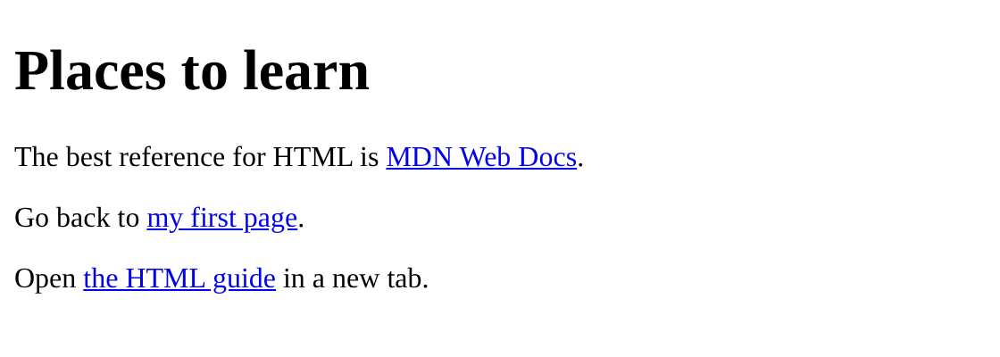
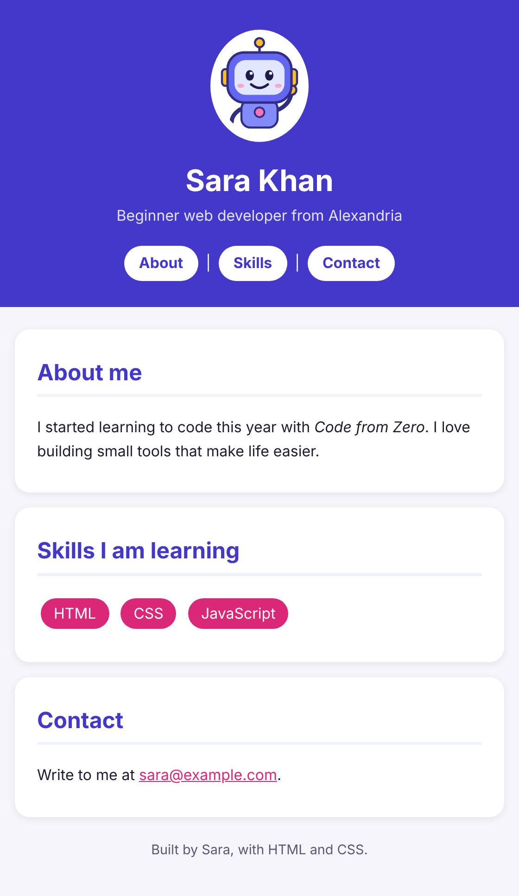
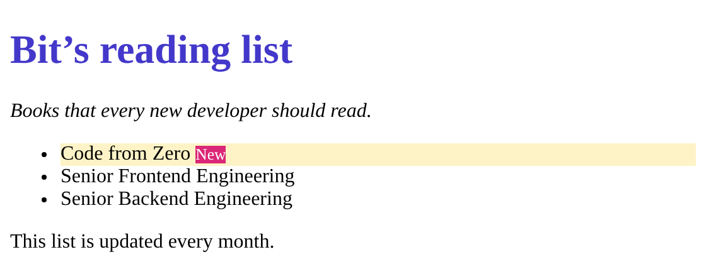
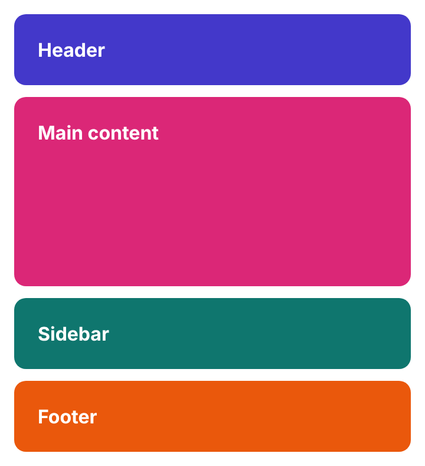
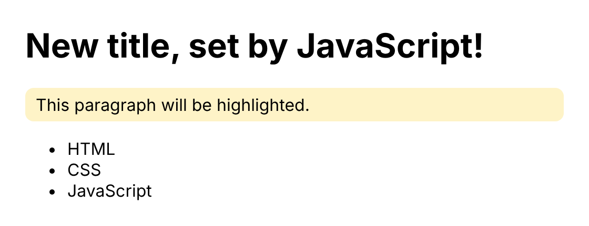
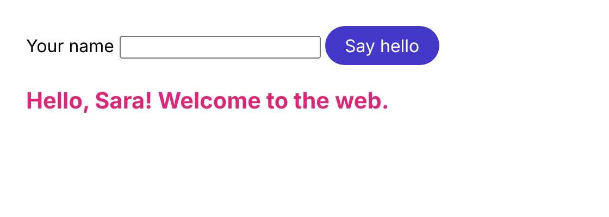

The code in this book is tested with Node.js 22. Every listing and its output is produced from the files in the book’s code repository.
JavaScript, Node.js and other names mentioned in this book are trademarks of their owners and are used for identification only.
ISBN: ———
Contents
Part 1: Thinking Like a Programmer
1How Computers Run Programs
2Thinking in Steps: Algorithms
3Your Developer Toolkit
Part 2: Building for the Web
4How the Web Works
5HTML: The Structure of a Page
6CSS: Styling a Page
7Layout with Flexbox and Grid
Part 3: JavaScript
8Values, Variables and Decisions (sample chapter)
9Loops and Arrays
10Functions
11Objects and JSON
12The DOM and Events
13Asynchronous JavaScript and fetch
14Reading Errors and Debugging
Part 4: Working Like a Professional
15Git and GitHub
16Accessible Pages for Everyone
17Project: Build and Publish a Web App
18Choosing Your Path
1
Chapter 1
How Computers Run Programs
In this chapter you will learn
what a program really is
the four main parts inside every computer, and what each one does
why computers store everything, even letters and pictures, as numbers
how the code you write becomes something a processor can run
how to run your very first line of JavaScript
Today you have probably used dozens of programs without thinking about it. Your phone’s alarm woke you up, a map found you the fastest road, and a chat app carried your messages across the world in less than a second. Every one of those programs was written by a person, line by line, using the same basic ideas you will learn in this book.
Bit
Hello! I’m Bit, and I’ll be your guide through this whole book. I love computers, but I promise: you do not need to be good at maths or “a computer person” to learn programming. You only need curiosity and a little patience. Ready?
Before you write any code, it helps to understand what happens inside the machine when a program runs. You do not need to become an engineer. A clear picture in your head is enough, and it will make everything in later chapters easier to understand.
1.1What is a program?
A program is a list of instructions that tells a computer exactly what to do, step by step. You can think of it as a recipe. A recipe says: take two eggs, beat them, heat the pan, pour the eggs in. A program says: read the number the user typed, add 10 to it, show the result on the screen.
There is one big difference between a cook and a computer. A cook understands what you mean. If a recipe says “add some salt”, a cook decides how much. A computer cannot guess. It does exactly what the instructions say, nothing more and nothing less, millions of times per second, without ever getting tired or bored.
That is why programming languages are so precise. Every comma, bracket and quote matters. At first this may feel strict, but it is also what makes computers so reliable: the same program, given the same input, gives the same answer every time.
1.2Inside the computer
Every computer, from a phone to a huge server in a data centre, has the same four main parts.
Figure 1.1: The four main parts of a computer and how information flows between them.
The processor (CPU) is the part that actually follows the instructions. It is very simple-minded: it can add numbers, compare them, and move them around. But it does this billions of times every second.
Memory (RAM) is the processor’s desk. It holds the program that is running and the data it is working on right now. It is very fast, but it forgets everything when the power goes off.
Storage, such as an SSD, is the filing cabinet. It keeps your files, photos and installed programs, even when the computer is off. It is much slower than memory.
Input and output connect the computer to the world: the keyboard, mouse, touch screen and microphone bring information in; the screen and speakers send it out. A network connection does both.
When you open an app, the computer copies the program from storage into memory, and the processor starts following its instructions one by one. When the program needs your name, it waits for input. When it has an answer, it sends output to the screen.
1.3Everything is a number
Here is the most surprising idea in this chapter: inside a computer, everything is stored as numbers. Your messages, your photos, your music and the programs themselves are all, in the end, long lists of numbers.
And not just any numbers. Computers are built from billions of tiny electronic switches, and each switch can be in only two states: off or on. We write these as 0 and 1. One switch is called a bit, short for “binary digit”. Eight bits together make a byte.
Bit
Yes, my name comes from there! A bit is the smallest piece of information a computer can hold. Small, but very important. Just like me.
Counting with only 0 and 1 is called binary. It works just like the decimal counting you know, except that you run out of digits after 1 instead of after 9:
Decimal
Binary
Decimal
Binary
0
0
5
101
1
1
6
110
2
10
7
111
3
11
8
1000
4
100
255
11111111
You will almost never write binary yourself; the computer handles it for you. But JavaScript can show you what a number looks like in binary, and we can check the table:
The toString(2) part means “write this number in base 2”, which is binary. parseInt("1101", 2) goes the other way and reads binary back into a normal number.
Letters are numbers too
If everything is a number, how does a computer store the letter A? It uses an agreed table that gives every character a number. The modern table is called Unicode, and it contains more than 150,000 characters from almost every writing system in the world, including Arabic, Chinese, and even emoji.
Capital A is number 65, small a is 97, and the Arabic letter ب is 1576. The last line goes the other way: the numbers 72 and 105 become the word “Hi”. A photo works the same way: it is a grid of tiny dots, and each dot is stored as three numbers for its red, green and blue light.
1.4From your code to the processor
A processor understands only one language: machine code, which is long sequences of numbers, each one a tiny instruction such as “add these two values”. Writing programs directly in machine code is possible, but painfully slow and easy to get wrong.
So people invented programming languages. A programming language lets you write instructions in a form that is much closer to human language, such as:
if (score > 100) { console.log("You win!"); }
A special program then translates your code into machine code. Some languages translate the whole program in advance, which is called compiling. Others translate and run it as they go, which is called interpreting. Modern JavaScript does a clever mix of both, but the important idea is simple: you write readable code, and a translator turns it into numbers for the processor.
Figure 1.2: A JavaScript engine turns your readable code into machine code.
Why JavaScript?
There are hundreds of programming languages. This book starts with JavaScript for three good reasons:
It is everywhere. Every web browser has a JavaScript engine built in, so you already own everything you need to run it.
It does almost everything. The same language builds websites, servers (with Node.js), mobile apps and even desktop programs.
It is in demand. For many years JavaScript has been one of the most used languages by professional developers around the world.
In this book you will run JavaScript in two places: in the browser, and in the terminal with Node.js, a program that brings the browser’s JavaScript engine to your computer. You will install Node.js in Chapter 3.
1.5Your first line of code
You do not have to wait until Chapter 3 to try JavaScript. Every browser has a hidden tool for developers. Open Chrome, Edge or Firefox, then press F12 (on a Mac, press Cmd + Option + J). A panel opens; click the tab called Console. Type each of these lines and press Enter after each one:
Congratulations: you have just run your first program! Look closely at the last two lines, because they hide a lesson. 2 + 3 adds two numbers and gives 5. But "2" + "3" gives 23. The quotes turn the digits into text, and adding two pieces of text joins them together. You will learn all about this difference in Chapter 8.
1.6What programmers really do
Many people imagine programmers typing fast in a dark room. The real job looks quite different. Most of a programmer’s time goes into:
Understanding the problem. What exactly should happen? What should happen when something goes wrong?
Planning. Breaking a big problem into small steps. This is the subject of Chapter 2.
Writing code, which is often the shortest part.
Testing and fixing. Running the program, finding where it behaves wrongly, and correcting it.
Reading code written by others, or by yourself months ago.
A mistake in a program is called a bug, and finding and fixing it is called debugging. Every programmer writes bugs every day, including the very best. What makes someone a good programmer is not avoiding bugs, but finding and fixing them calmly.
Common misunderstandings
People often think…
In reality…
You must be very good at maths
Most programming needs only basic arithmetic and clear thinking
Computers are smart
Computers are fast and exact, but they only follow instructions
Good programmers do not make mistakes
Good programmers make mistakes all the time and fix them well
You must memorise everything
Professionals look things up every day; understanding matters more than memory
Summary
A program is a precise list of instructions. The computer does exactly what it says.
Every computer has a processor, memory, storage, and input and output.
Everything inside a computer is stored as numbers made of bits; eight bits are a byte.
Letters are numbers too, thanks to Unicode.
Programming languages are translated into machine code by compilers or interpreters.
JavaScript runs in every browser and, with Node.js, on your computer.
Programming is mostly understanding, planning, testing and fixing; mistakes are called bugs.
Exercises
Easy Name the four main parts of a computer, and give one example of input and one of output.
Easy Using the table in Section 1.3, what is 9 in binary? Check your answer with (9).toString(2) in the browser console.
Medium Find the Unicode number of the first letter of your name with "X".charCodeAt(0), replacing X with your letter.
Medium Predict what each line prints, then check in the console: console.log(10 + 5), console.log("10" + "5"), console.log("10 + 5").
Challenge Write the steps for making a cup of tea so precisely that a robot who knows nothing could follow them. Then ask a friend to find a step a robot could misunderstand.
Answers to the exercises are at the end of the book and in the book’s code repository.
Coming up in Chapter 2
Exercise 5 is a taste of the next chapter. Before programmers write code, they plan the steps. In Chapter 2 you will learn to turn any problem into a clear list of steps, called an algorithm, and to check that it works before you type a single line.
2
Chapter 2
Thinking in Steps: Algorithms
In this chapter you will learn to
explain what an algorithm is, and what makes a good one
break a big problem into small, clear steps
write your plan as pseudocode and draw it as a flowchart
recognise the three building blocks of every program
test an algorithm by hand before you write any code
Imagine giving someone directions to your home. If you say “go straight, then turn somewhere near the big shop”, they will probably get lost. If you say “walk 200 metres to the traffic lights, turn left, and stop at the third door on the right”, they will arrive. Programming is mostly the skill of giving the second kind of directions.
Bit
Here’s a secret: the best programmers often spend more time thinking with a pen and paper than typing. In this chapter we will not worry about the details of JavaScript. We will learn how to think. The code will feel much easier afterwards.
2.1What is an algorithm?
An algorithm is a step-by-step method for solving a problem. A recipe is an algorithm for a meal. The method you learned at school for long division is an algorithm. The steps a map app follows to find the fastest road are an algorithm too, just a much bigger one.
A good algorithm has four qualities:
Quality
What it means
Bad example
Precise
Every step has exactly one meaning
“Add a little sugar”
Ordered
The steps happen in a clear order
Pouring the tea before boiling the water
Finite
It always finishes
“Keep stirring”, with no point at which to stop
Correct
It gives the right answer for every possible input
A method that works for 3 cards but not for 1
2.2Breaking a problem down
Big problems feel impossible until you split them into small ones. Programmers call this decomposition. Let us practise on a real task.
The problem: you have a pile of numbered cards, face down. You want to find the card with the largest number.
How would you do it, with real cards? Most people do something like this: turn over the first card and remember its number. Then look at each of the other cards in turn. Whenever a card is bigger than the one you remember, remember the new card instead. When there are no more cards, the one you remember is the largest.
That is already an algorithm. Notice what made it work: you only ever had to remember one number, the largest so far. That small idea is what makes the problem easy for a computer, too.
2.3Pseudocode: planning in plain language
Pseudocode is a way of writing an algorithm in simple, structured language before you turn it into real code. There are no strict rules; it only needs to be clear. Here is our card algorithm as pseudocode:
set LARGEST to the first card
for each CARD in the pile:
if CARD is bigger than LARGEST:
set LARGEST to CARD
show LARGEST
Pseudocode lets you focus on the idea without worrying about commas and brackets. Many professional teams write pseudocode, or simply a list of steps in a comment, before writing a tricky piece of code.
2.4Flowcharts: drawing the plan
Some people think better with pictures. A flowchart draws an algorithm as boxes connected by arrows. Rounded boxes show the start and end, rectangles show actions, and diamonds show questions with yes or no answers.
Figure 2.1: The card algorithm as a flowchart. Follow the arrows with your finger for the cards 7, 3 and 12.
Flowcharts are wonderful for small algorithms and for explaining your idea to someone else. For big programs they become too large, and pseudocode or real code is clearer.
2.5The three building blocks
Here is one of the most important facts in computer science: every program, however large, is built from just three kinds of step.
Sequence: do this, then this, then this, in order.
Selection: if something is true, do this; otherwise, do that. (You will learn this properly in Chapter 8.)
Repetition: do this again and again, for each item or until something happens. (This is Chapter 9.)
A simple program that uses only sequence looks like this. It works out the average of three test scores:
average.js
// Sequence: each step runs once, in order.const first = 8;
const second = 6;
const third = 10;
const total = first + second + third;
const average = total / 3;
console.log(`Average: ${average}`);
Terminal
Average: 8
Every line runs exactly once, from top to bottom. Our card algorithm needs all three blocks: it runs steps in sequence, it selects (“if this card is bigger”), and it repeats (“for each card”).
2.6From pseudocode to JavaScript
Now the exciting part. Look at the pseudocode from Section 2.3 again, and then at the same algorithm written in JavaScript:
largest.js
const cards = [7, 3, 12, 5, 9];
let largest = cards[0];
for (const card of cards) {
if (card > largest) {
largest = card;
}
}
console.log(`The largest card is ${largest}`);
Terminal
The largest card is 12
You have not learned all of this syntax yet, and that is fine. Put the two versions side by side and you can see that the code follows the plan line by line:
Pseudocode
JavaScript
set LARGEST to the first card
let largest = cards[0];
for each CARD in the pile
for (const card of cards)
if CARD is bigger than LARGEST
if (card > largest)
set LARGEST to CARD
largest = card;
show LARGEST
console.log(…)
This is how professionals work. The thinking happens in the plan; the code is a translation of the plan into a language the computer understands. When the plan is clear, the translation is easy.
2.7Testing by hand: the trace table
How do you know an algorithm is correct before you run it? You trace it: you pretend to be the computer, and you write down the value of every variable after every step. Here is a trace of our algorithm with the cards 7, 3, 12, 5 and 9:
Step
card
card > largest?
largest
start
–
–
7
1
7
no
7
2
3
no
7
3
12
yes
12
4
5
no
12
5
9
no
12
The final value is 12, which is correct. A good tester also tries the unusual cases. What if there is only one card? What if the largest card is first, or last? What if two cards are equal? Try each one in your head with the trace table. You will find that this algorithm handles them all.
2.8A taste of efficiency
Two algorithms can both be correct, while one is enormously faster. Imagine a phone book with a million names in alphabetical order, and you want to find “Omar”.
Method 1: read the names one by one from the start. In the worst case you read all one million.
Method 2: open the book in the middle. If “Omar” comes before that page, throw away the second half; otherwise throw away the first half. Repeat with the half that is left. Each step halves the problem. How many steps does it take? Let the computer count:
halving.js
let names = 1000000;
let steps = 0;
while (names > 1) {
names = Math.ceil(names / 2);
steps = steps + 1;
}
console.log(`Steps needed: ${steps}`);
Terminal
Steps needed: 20
Twenty steps instead of a million! This method is called binary search, and it only works because the names are sorted. Choosing the right algorithm often matters far more than having a fast computer. You will meet this idea again throughout the senior books in this series.
Bit
Twenty steps for a million names, and only thirty for a billion! Every time the list doubles, binary search needs just one more step. That is the power of a good idea.
Summary
An algorithm is a precise, ordered, finite and correct list of steps for solving a problem.
Decomposition means breaking a big problem into small ones. Solving it by hand first often shows you the steps.
Pseudocode and flowcharts let you plan without worrying about syntax.
Every program is built from sequence, selection and repetition.
Code is a translation of the plan. When the plan is clear, the code is easy.
A trace table tests an algorithm by hand. Always try unusual cases, especially the empty one.
A better algorithm, such as binary search, can be millions of times faster.
Quick check answers: 1. Sequence, selection and repetition. 2. Because only the largest card seen so far can matter; any smaller card can never be the answer. 3. Because throwing away half the list only works when you know the name must be in the other half, and that is true only when the list is sorted.
Exercises
Easy Write pseudocode for finding the smallest card. What do you need to change from the largest-card algorithm?
Easy Draw a flowchart for crossing a road at traffic lights.
Medium Write pseudocode that counts how many cards are bigger than 5. Trace it with the cards 7, 3, 12, 5, 9. (The answer should be 3.)
Medium Using binary search, how many steps do you need for 1,000 names? Change halving.js to check your answer.
Challenge Write pseudocode that finds both the largest and the second-largest card in one pass through the pile. Trace it with 7, 3, 12, 5, 9, and then with 12, 12, 4.
Answers to the exercises are at the end of the book and in the book’s code repository.
Coming up in Chapter 3
You now know how to think like a programmer. Next you will set up the tools that professionals use every day: a code editor, the terminal and Node.js, so you can turn your plans into programs on your own computer.
3
Chapter 3
Your Developer Toolkit
In this chapter you will
install and set up Visual Studio Code, a free professional code editor
learn the handful of terminal commands every developer uses daily
install Node.js and run a JavaScript file on your own computer
create the project folder you will use for the rest of this book
meet the browser’s developer tools and learn where to find good help
A carpenter needs a saw, a hammer and a tape measure before building anything. A programmer needs tools too, and the good news is that the best ones are free. By the end of this chapter your computer will be set up exactly like a professional developer’s, and every example in this book will run on it.
Bit
Setting up tools is the one part of programming that feels a bit boring. But you only do it once! Follow along step by step, and if something looks different on your screen, don’t worry: menus move around between versions, but the ideas stay the same.
3.1The code editor
You could write code in any plain text program, but a code editor makes life much easier. It colours your code so you can read it, warns you about mistakes as you type, completes long words for you, and can run your programs without leaving the window.
This book uses Visual Studio Code, usually called VS Code. It is free, it works on Windows, macOS and Linux, and it is the most popular editor among professional developers.
Go to code.visualstudio.com and download the version for your computer.
Install it like any other program. On Windows, tick the option Add to PATH if you see it.
Open VS Code. You will see a welcome page, which you can close.
A quick tour
Figure 3.1: The four areas of VS Code: (1) the activity bar, (2) the Explorer with your files, (3) the editor, and (4) the built-in terminal.
The activity bar on the far side switches between views: files, search, Git and extensions.
The Explorer shows the files in your project folder.
The editor is where you write code. You can open several files in tabs.
The terminal panel lets you run commands without leaving VS Code. Open it from the menu View → Terminal.
Settings that help beginners
Open the extensions view, search for Prettier and click Install. Prettier is a formatter: every time you save, it neatly arranges spaces and line breaks in your code, so you never have to worry about them. Then open the settings file with Ctrl + Shift + P (Cmd + Shift + P on a Mac), type Open User Settings (JSON), and add these lines:
These settings make the text bigger, format your code on every save, save files automatically when you switch windows, and wrap long lines so you never have to scroll sideways.
3.2The terminal
The terminal (also called the command line or shell) is a window where you control the computer by typing commands instead of clicking. It may look old-fashioned, but every professional developer uses it every day. It is faster than clicking, and many tools, including Node.js, are used mainly from the terminal.
You can open it inside VS Code, or on its own:
Windows: open Terminal (or PowerShell) from the Start menu.
macOS: press Cmd + Space, type Terminal, and press Enter.
Linux: press Ctrl + Alt + T on most systems.
The terminal shows a prompt, often ending in $ or >, and waits for you to type. In this book, a line that starts with $ is a command for you to type (without the $), and the lines below it are what the computer answers.
Five commands you need
terminal
$ pwd
/Users/sara
$ ls
Desktop Documents Downloads code-from-zero
$ cd code-from-zero$ pwd
/Users/sara/code-from-zero
$ cd ..
Command
What it does
Example
pwd
Shows which folder you are in (“print working directory”)
pwd
ls
Lists the files and folders here
ls
cd
Changes into another folder; cd .. goes up one level
cd code-from-zero
mkdir
Makes a new folder
mkdir my-app
clear
Clears the screen
clear
These five commands work the same in the macOS and Linux terminals and in Windows PowerShell, so you can follow this book on any computer.
3.3Installing Node.js
In Chapter 1 you ran JavaScript in the browser. Node.js lets you run JavaScript files directly on your computer from the terminal. You will use it for most of the examples in this book.
Go to nodejs.org.
Download the version marked LTS, which stands for “Long Term Support”. It is the stable version that companies use.
Run the installer and accept the default options.
Close and reopen your terminal, so it notices the new program.
Check that everything works by asking for the version numbers:
terminal
$ node --version
v22.12.0
$ npm --version
10.9.0
Your numbers will probably be different, and that is fine. Any LTS version from 22 upwards will run every example in this book. npm was installed together with Node.js; it is the tool for adding ready-made code packages to a project, and you will meet it in later chapters.
3.4Your first project
Developers keep each project in its own folder. Let us create the folder you will use for every example in this book:
terminal
# Make a folder for the book, go into it, and open it in VS Code$ mkdir code-from-zero$ cd code-from-zero$ code .
The last command, code ., opens the current folder in VS Code. The dot means “this folder”. (On a Mac, if code is not found, open VS Code, press Cmd + Shift + P and run Shell Command: Install ‘code’ command in PATH.)
In the VS Code Explorer, click the New File icon, name the file check.js, and type:
check.js
console.log("Node.js is working!");
console.log(`2 + 2 = ${2 + 2}`);
Save it, open the terminal panel in VS Code, and run it:
terminal
$ node check.js
Node.js is working!
2 + 2 = 4
If you see those two lines, your toolkit is complete. You wrote a file, saved it, and asked Node.js to run it. That is exactly how professional developers work all day long.
Bit
You did it! From now on, whenever you see a file name above a listing in this book, create that file in your code-from-zero folder and run it with node and the file name.
3.5The browser’s developer tools
You already opened the browser’s developer tools (DevTools) in Chapter 1 with F12. They contain much more than the console. The three tabs you will use most are:
Tab
What you can do there
Used in
Elements
See and edit the HTML and CSS of any page, live
Chapters 5 to 7
Console
Run JavaScript and see messages and errors
All JavaScript chapters
Network
Watch every file and request the page loads
Chapters 4 and 13
3.6Where to find good help
No developer remembers everything. Knowing where to look is a professional skill:
MDN Web Docs (developer.mozilla.org) is the most trusted reference for HTML, CSS and JavaScript. It explains every feature with examples. When you search the web, add “mdn” to your search.
Error messages are help too. Copy the main line of an error into a search engine; someone has almost always had the same problem before. Chapter 14 teaches you to read errors properly.
Q&A sites and forums, such as Stack Overflow, have answers to millions of questions. Check the date of an answer, because old answers may describe outdated ways of working.
AI assistants can explain an idea in different words or help you understand an error. Use them as a patient tutor, not as a replacement for thinking: type the code yourself, and always test that it really works.
3.7Small habits, big difference
Name files in lowercase, with dashes instead of spaces:ticket-kiosk.js, not Ticket Kiosk.js. Spaces in names cause trouble in the terminal and on web servers.
One folder per project, and nothing unrelated inside it.
Learn a few keyboard shortcuts. They save hours over a year:
Action
Windows and Linux
macOS
Save
Ctrl + S
Cmd + S
Undo
Ctrl + Z
Cmd + Z
Comment a line on or off
Ctrl + /
Cmd + /
Open or close the terminal
Ctrl + `
Ctrl + `
Command palette
Ctrl + Shift + P
Cmd + Shift + P
Summary
VS Code is a free, professional code editor. Prettier formats your code on every save.
The terminal controls the computer with typed commands. Start with pwd, ls, cd, mkdir and clear, plus the Up arrow and Tab.
Node.js runs JavaScript files on your computer: node file.js. Install the LTS version.
Keep each project in its own folder, and name files in lowercase with dashes.
The browser’s DevTools let you inspect pages, run JavaScript and watch network requests.
MDN is the best reference. Ask questions with what you tried, what you expected and what happened.
Exercises
Easy In the terminal, go into your code-from-zero folder, create a folder called chapter-03 with mkdir, go into it, and check where you are with pwd.
Easy Create me.js that prints your name, your city and your favourite food on three lines. Run it with Node.js.
Medium Find the MDN page for console.log. What other console commands does it list? Try console.error and console.table.
Medium Open any website’s DevTools, choose Network, and reload the page. How many requests did it make? Which was the largest file?
Challenge Use only the terminal (no mouse) to create a folder practice, create a file inside it with the command code practice/test.js, write a program that prints the result of 365 * 24, and run it. What does the number mean?
Answers to the exercises are at the end of the book and in the book’s code repository.
Coming up in Chapter 4
Your tools are ready. Part 2 of the book is about the web. Before you build your first page, you will find out what really happens in the second between typing an address and seeing a website appear.
4
Chapter 4
How the Web Works
In this chapter you will learn
what clients and servers are, and how they talk to each other
how to read every part of a web address
how your computer finds a server anywhere in the world in milliseconds
what an HTTP request and response look like, and what status codes mean
how a browser turns HTML, CSS and JavaScript into a page, and how to build a tiny web server yourself
You type an address, press Enter, and less than a second later a page appears. It feels like magic, but behind it is a short, well-organised conversation between your computer and another computer that may be on the other side of the planet. In this chapter you will listen in on that conversation, and at the end you will take part in it with a server of your own.
Bit
This chapter is the map for the rest of Part 2 and for your whole career on the web. Every website, every app and every API you will ever build uses the ideas in these pages. Let’s follow a request on its journey!
4.1Clients and servers
The web is built on a simple idea. One computer asks for something; another computer answers. The one that asks is called the client. The one that answers is called the server.
Think of a restaurant. You, the customer, are the client. You do not walk into the kitchen; you give your order to a waiter, who takes it to the kitchen and brings back your food. On the web, your browser is the customer, the server is the kitchen, and the waiter is a set of rules called HTTP, the HyperText Transfer Protocol, which both sides agree to follow.
A server is not a special kind of machine. It is any computer running a program that waits for requests and answers them. Big websites use thousands of servers in data centres, but at the end of this chapter your own laptop will be a server for a moment.
4.2Reading a web address
Every page on the web has an address called a URL (Uniform Resource Locator). A URL has several parts, and each one tells the browser something:
Figure 4.1: The six parts of a URL. Most addresses you type use only the first, second and fourth.
Part
Example
What it means
Protocol
https:
The language to use. https is HTTP with encryption.
Host
shop.example.com
The name of the server to contact.
Port
8080
Which “door” on the server. Usually hidden, because the web uses 443 for HTTPS and 80 for HTTP.
Path
/products/shoes
Which page or file on that server.
Query
?size=42&color=red
Extra details, as name=value pairs joined with &.
Fragment
#reviews
A place inside the page. It is never sent to the server.
JavaScript can take a URL apart for you with new URL(). This is exactly what browsers do with every address you type:
Computers on the internet do not find each other by name. Each one has a number called an IP address, such as 93.184.215.14. Names like example.com exist only because people remember words better than numbers.
So before your browser can talk to shop.example.com, it must find that server’s number. It asks the Domain Name System (DNS), which works like the contacts app on your phone: you tap a name, and the phone looks up the number. DNS is a huge, shared “contacts list” for the whole internet, spread across thousands of servers around the world.
Figure 4.2: The journey of a request. Steps 1 and 2 find the server; steps 3 and 4 are the HTTP conversation.
Your computer remembers DNS answers for a while, so this lookup usually takes only a few milliseconds, or no time at all if you visited the site recently.
4.4The HTTP conversation
Once the browser knows the server’s address, it sends an HTTP request. It is surprisingly readable plain text:
request
GET /products/shoes?size=42 HTTP/1.1
Host: shop.example.com
User-Agent: Mozilla/5.0 (Windows NT 10.0) Chrome/131
Accept: text/html
Accept-Language: en-US,en
The first line says what the browser wants: the method GET (“please give me”), the path, and the HTTP version. The lines below are headers: extra information, such as which browser this is and which languages the user prefers. That last header is how a website can show you Arabic or English automatically.
The first line holds the status code, a three-digit number that says how things went. Then come the response headers, an empty line, and finally the body: the actual content, here an HTML page.
Methods
Method
Meaning
Example
GET
Give me something
Open a page, load a photo
POST
Here is something new
Send a sign-up form, post a comment
PUT / PATCH
Change something that exists
Edit your profile
DELETE
Remove something
Delete a message
Status codes
You do not need to memorise every code. The first digit tells you the family:
Family
Meaning
Common examples
2xx
Success
200 OK, 201 Created
3xx
Look somewhere else
301 Moved Permanently, 304 Not Modified
4xx
The client made a mistake
404 Not Found, 401 Unauthorized, 403 Forbidden
5xx
The server made a mistake
500 Internal Server Error, 503 Service Unavailable
Bit
Here’s an easy way to remember it: 4xx means “you did something wrong” (like asking for a page that doesn’t exist), and 5xx means “I did something wrong” (the server broke). When you build servers later, choosing the right status code will be part of your job.
4.5HTTPS and the padlock
Plain HTTP sends everything as readable text. Anyone on the way, for example on the same café Wi-Fi, could read your passwords. HTTPS solves this by encrypting the conversation: the browser and the server agree on a secret key, and everything is scrambled so that only they can read it. HTTPS also proves that the server really belongs to the website’s owner, thanks to a digital certificate.
The padlock next to the address bar means the connection is encrypted. Today almost every website uses HTTPS, browsers warn you about sites that do not, and free certificates mean there is no excuse not to use it. Everything you publish in this book will use HTTPS.
4.6How the browser builds the page
The first response is usually an HTML file. As the browser reads it, it finds links to other files it needs, such as stylesheets, scripts, images and fonts, and requests each one. A typical news page makes dozens or even hundreds of requests. You saw them in the Network tab in Chapter 3.
Three languages work together to make every page, and the rest of Part 2 and Part 3 teaches all three:
Language
Job
In a house, it is…
Chapters
HTML
Structure and content
The walls, rooms and furniture
5
CSS
Appearance and layout
The paint, the curtains and where things stand
6 and 7
JavaScript
Behaviour
The electricity: lights, doorbell and alarm
8 to 14
The browser turns the HTML into a tree of elements, applies the CSS rules to decide how each one looks and where it goes, paints the result on the screen, and runs the JavaScript, which can change any of it at any moment.
4.7Project: your own web server
Time to take part in the conversation yourself. Node.js includes everything you need to build a web server in a few lines. The program below plays both roles: it starts a server, and then it acts as a client and asks that server for a page, exactly as a browser would.
server.js
const http = require("node:http");
// The server: answers every request with a small HTML page.const server = http.createServer((request, response) => {
console.log(`Request: ${request.method} ${request.url}`);
response.writeHead(200, { "Content-Type": "text/html; charset=utf-8" });
response.end("<h1>Hello from my server!</h1>");
});
server.listen(3000, async () => {
console.log("Server ready at http://localhost:3000");
// The client: ask our own server for a page, like a browser would.const reply = await fetch("http://localhost:3000/hello");
console.log(reply.status, reply.statusText);
console.log(reply.headers.get("content-type"));
console.log(await reply.text());
server.close();
});
Run it with node server.js:
Terminal
Server ready at http://localhost:3000
Request: GET /hello
200 OK
text/html; charset=utf-8
<h1>Hello from my server!</h1>
Read the output from top to bottom and you can see the whole conversation from this chapter. The server starts. A GET request for /hello arrives. The server answers with status 200 OK, a Content-Type header saying “this is HTML”, and a body containing a heading. Then the program closes the server.
A few new words appear in this program. require loads a module that comes with Node.js; http.createServer receives a function that runs once for every request; and await waits for the reply to arrive. You will learn functions in Chapter 10 and await in Chapter 13. For now, enjoy the fact that you have written a real web server.
The name localhost always means “this computer”, and 3000 is the port. Developers run servers on their own machine like this all day while building websites.
Summary
A client asks and a server answers. They talk using HTTP.
A URL has a protocol, host, port, path, query and fragment.
DNS turns a domain name into an IP address, like the contacts list on a phone.
A request has a method, a path and headers; a response has a status code, headers and a body.
Status codes: 2xx success, 3xx redirect, 4xx client error, 5xx server error.
HTTPS encrypts the conversation and proves who the server is.
Pages are built from HTML (structure), CSS (appearance) and JavaScript (behaviour).
With Node.js you can build a web server in a few lines.
Quick check answers: 1. The host is news.example.org and the path is /sport (?team=ahly is the query). 2. “Not Found”: the page does not exist. It is a client error, because the client asked for something that is not there. 3. The fragment, the part after #.
Exercises
Easy Write down the protocol, host, path and query of https://www.example.com/search?q=javascript&page=2. Check your answer by changing url.js.
Easy Visit a page that does not exist on any website, such as /this-page-does-not-exist. Open the Network tab and find the status code.
Medium Change server.js so the page shows your name in the heading and a paragraph about you, using <p> after the <h1>.
Medium In server.js, change the status code from 200 to 404. What does the output show now? Does the browser still display the page?
Challenge Make the server answer differently depending on the path: if request.url is "/about", send an “About me” page; otherwise send the normal page. (Hint: use an if, from Chapter 8.)
Answers to the exercises are at the end of the book and in the book’s code repository.
Coming up in Chapter 5
Your server sent a single heading. In the next chapter you will learn HTML properly and build your first real web page, with headings, paragraphs, links, images and lists, structured the way professionals do it.
5
Chapter 5
HTML: The Structure of a Page
In this chapter you will learn to
read and write HTML elements, tags and attributes
build the skeleton that every web page starts with
add headings, paragraphs, links, images and lists
give a page meaningful structure with header, nav, main and footer
build your first real page: a personal profile
Every web page you have ever visited, from a small blog to a giant online shop, is built on HTML. It is the first language of the web, and also the friendliest: in this chapter you will write real pages in minutes, open them in your browser, and see exactly what each line does.
Bit
HTML is not really a programming language. There are no calculations and no decisions. It is a markup language: you mark up your content to tell the browser what each piece is. That’s why it’s the perfect place to start building!
5.1Elements, tags and attributes
HTML stands for HyperText Markup Language. You write your content, and you wrap each piece of it in tags that say what it is: a heading, a paragraph, a link, an image. A pair of tags together with the content between them is called an element.
Figure 5.1: The parts of an HTML element.
The opening tag is the element’s name between angle brackets: <p>, <h1>, <a>.
The closing tag is the same, with a slash: </p>.
Attributes go inside the opening tag and give extra information, always as name="value". Here, href says where the link goes.
A few elements have no content and no closing tag, such as <img> and <br>. They are called void elements.
5.2The skeleton of every page
Every HTML page starts with the same few lines. In your code-from-zero folder, create a folder called chapter-05 and in it a file called first.html:
first.html
<!doctype html><htmllang="en"><head><metacharset="utf-8"><metaname="viewport"content="width=device-width, initial-scale=1"><title>My First Page</title></head><body><h1>Hello, web!</h1><p>This is my very first web page. I wrote it myself, in HTML.</p></body></html>
Double-click the file to open it in your browser (or drag it into a browser window):
first.html560px
Figure 5.2: Your first web page.
Each line of the skeleton has a job:
Line
Job
<!doctype html>
Tells the browser this is a modern HTML page.
<html lang="en">
The root element that wraps everything. lang says which language the page is in, which helps screen readers and search engines.
<head>
Information about the page, which is not shown in the page itself.
<meta charset="utf-8">
Uses UTF-8, the encoding for Unicode, so every language and emoji displays correctly.
<meta name="viewport" …>
Makes the page fit phone screens properly.
<title>
The text in the browser tab and in search results.
<body>
Everything the visitor sees.
Notice how the lines are indented: elements inside other elements are moved two spaces to the right. The browser does not care about indentation, but people do. It shows at a glance which element is inside which, and Prettier does it for you every time you save.
5.3Text: headings and paragraphs
Most web content is text, and HTML has elements to give it structure. From now on, listings show only the <body>, because the <head> is the same skeleton every time; only the <title> changes. The full files are in the book’s code repository.
text.html
...
<body><h1>Three Days in Cairo</h1><p>Cairo is <strong>huge, loud and wonderful</strong>. I spent three days there and still saw only a <em>tiny</em> part of it.</p><h2>Day 1: The pyramids</h2><p>We arrived at Giza early, before the crowds. The Great Pyramid is even bigger than I imagined.</p><h2>Day 2: Old Cairo</h2><h3>Lunch</h3><p>We ate koshari, a dish of rice, lentils, pasta and a spicy tomato sauce.</p></body>
...
text.html560px
Figure 5.3: Headings, paragraphs and emphasis, with the browser’s default styles.
<h1> to <h6> are headings, from the most important to the least. Use one <h1> per page for its main title, then <h2> for sections, <h3> for sub-sections, and so on, like the chapters and sections of this book.
<p> is a paragraph. The browser adds space around each one.
<strong> marks text as important (shown in bold), and <em> gives it emphasis (shown in italics).
5.4Links
Links are what make the web a web: pages connected to each other all over the world. The anchor element <a> creates a link, and its href attribute says where it goes:
links.html
...
<body><h1>Places to learn</h1><p>The best reference for HTML is <ahref="https://developer.mozilla.org">MDN Web Docs</a>.</p><p>Go back to <ahref="first.html">my first page</a>.</p><p>Open <ahref="https://developer.mozilla.org/en-US/docs/Web/HTML"target="_blank"rel="noopener">the HTML guide</a> in a new tab.</p></body>
...
links.html560px

Figure 5.4: Links are blue and underlined by default.
The first link is absolute: it contains the full address of another website. The second is relative: first.html means “the file called first.html in the same folder as this page”. Use relative links between the pages of your own site, so they keep working when you move the whole site to a server.
The third link opens in a new tab because of target="_blank". The extra rel="noopener" is a small security measure that you should always add with it.
5.5Images
The <img> element shows a picture. Download the file bit.svg from the book’s code repository into your chapter-05 folder, or use any picture you like:
image.html
...
<body><h1>Meet Bit</h1><imgsrc="bit.svg"alt="Bit, a small purple robot, waving"width="120"height="140"><p>Bit is the friendly robot who guides you through this book.</p></body>
...
image.html560px
Figure 5.5: An image on the page.
src is the image file: a relative path, or a full address on the web.
alt is a text description of the image. Screen readers read it aloud, search engines index it, and browsers show it if the image cannot load.
width and height tell the browser how much space to keep, so the page does not jump around while the image loads.
5.6Lists
HTML has two common kinds of list. Use <ul> (unordered list) when the order does not matter, and <ol> (ordered list) when it does. Inside both, each item is an <li>:
lists.html
...
<body><h1>Making tea</h1><h2>You need</h2><ul><li>Water</li><li>Tea leaves</li><li>A cup</li><li>Sugar (optional)</li></ul><h2>Steps</h2><ol><li>Boil the water.</li><li>Put the tea in the cup.</li><li>Pour the water and wait three minutes.</li><li>Add sugar if you like.</li></ol></body>
...
lists.html560px
Figure 5.6: The browser adds bullets and numbers for you.
Lists are everywhere on the web, often in places you would not guess: the menu at the top of most websites is a list of links, styled with CSS so it no longer looks like a list.
5.7Giving a page structure
Real pages have parts: a top area with the site’s name and menu, the main content, and a footer at the bottom. HTML has semantic elements for these parts. “Semantic” means they describe the meaning of their content, not its look:
Figure 5.7: The parts of the page above. Without CSS they look like plain text, but the browser, search engines and screen readers know what each part is.
Element
Use it for
<header>
The introduction of the page or a section: logo, title, menu
<nav>
The main navigation links
<main>
The main content. Only one per page.
<section>
A themed part of the content, usually with a heading
<article>
Content that makes sense on its own: a blog post, a news story, a product
<footer>
The end of the page or section: copyright, contacts, links
You will also meet two elements with no meaning at all: <div>, a general block, and <span>, a general piece of inline text. Use them only when no semantic element fits, usually as hooks for CSS.
5.8A first look at forms
Forms let visitors send information: a search, a login, a sign-up. You will make forms come alive with JavaScript in Chapter 12, but the structure is pure HTML:
form.html
...
<body><h1>Join the newsletter</h1><form><p><labelfor="name">Your name</label><inputid="name"name="name"type="text" required></p><p><labelfor="email">Your email</label><inputid="email"name="email"type="email" required></p><buttontype="submit">Sign me up</button></form></body>
...
form.html560px
Figure 5.8: A form with two fields and a button.
Each <input> has a <label>, connected by matching for and id values. Clicking the label puts the cursor in the field, and screen readers announce the label. type="email" brings the right keyboard on phones, and required makes the browser refuse to send an empty field. Try pressing the button with the fields empty!
5.9Project: your profile page
Let us combine everything into a real page: a profile of Sara, a new web developer. Replace her details with your own as you type.
profile.html
...
<body><header><imgsrc="bit.svg"alt="Sara’s avatar: a smiling purple robot"width="90"height="105"><h1>Sara Khan</h1><p>Beginner web developer from Alexandria</p><nav><ahref="#about">About</a> |
<ahref="#skills">Skills</a> |
<ahref="#contact">Contact</a></nav></header><main><sectionid="about"><h2>About me</h2><p>I started learning to code this year with <em>Code from Zero</em>. I love building small tools that make life easier.</p></section><sectionid="skills"><h2>Skills I am learning</h2><ul><li>HTML</li><li>CSS</li><li>JavaScript</li></ul></section><sectionid="contact"><h2>Contact</h2><p>Write to me at <ahref="mailto:sara@example.com">sara@example.com</a>.</p></section></main><footer><p>Built by Sara, with HTML only.</p></footer></body>
...
profile.html560px
Figure 5.9: The profile page, with HTML only and no styling yet.
Two new tricks appear here. The links in the menu point to #about, #skills and #contact: a # followed by an id jumps to the element with that id on the same page. And the contact link starts with mailto:, which opens the visitor’s email app.
The page works, and its structure is excellent, but it is plain. That is normal: HTML’s job is structure, not beauty. In the next two chapters you will turn exactly this page into something you will be proud to share.
Bit
Right-click your page and choose Inspect. The Elements panel shows the tree of elements you wrote. You built that tree! Hover over each element and watch the browser highlight it on the page.
Common mistakes
Mistake
What happens
Fix
Forgetting a closing tag, such as </p>
The browser guesses where the element ends, sometimes wrongly
Close every element that has content
Wrong nesting: <p><strong>…</p></strong>
Unpredictable layout
Close elements in the reverse order you opened them
Missing <meta charset="utf-8">
Arabic or accented letters show as strange symbols
Always start with the full skeleton
Spaces or capital letters in file names
Links work on your computer but break on a server
Use names like about-me.html
Image without alt
Screen reader users do not know what it shows
Describe every meaningful image
Summary
HTML marks up content with elements: an opening tag, content, and a closing tag. Attributes add information as name="value".
Every page starts with the same skeleton: doctype, html with lang, head with charset, viewport and title, and body.
Use headings h1 to h6 in order, paragraphs p, and strong and em for importance and emphasis.
a makes links with href; img shows images with src and a meaningful alt.
ul and ol hold list items li.
Semantic elements such as header, nav, main, section, article and footer describe the structure of the page.
Forms use form, label, input and button.
Quick check answers: 1. The attributes are src and alt. <img> is a void element: it has no content between tags, so it needs no closing tag. 2. When the order of the items matters, such as steps or a ranking. 3. One.
Exercises
Easy Create favourites.html with a heading and an unordered list of your five favourite films, books or games.
Easy Add a link from favourites.html to profile.html, and a link back again.
Medium Write a recipe page for a dish you like, with an <h1>, an image with a good alt, a list of ingredients and numbered steps.
Medium Open any large website, open DevTools and look at the Elements panel. Find its <header>, <nav> and <footer>. Does it use semantic elements, or only <div>s?
Challenge Turn your profile page into a small three-page website: index.html (about you), projects.html and contact.html with a form. Every page should have the same <header> and <nav> linking to the other two.
Answers to the exercises are at the end of the book and in the book’s code repository.
Coming up in Chapter 6
Your profile page has a great skeleton. Next, CSS gives it colours, fonts, spacing and personality. By the end of Chapter 6 you will hardly recognise it.
6
Chapter 6
CSS: Styling a Page
In this chapter you will learn to
write CSS rules and connect a stylesheet to a page
choose elements with type, class and id selectors
use colours, fonts and units like a professional
understand the box model: content, padding, border and margin
turn your plain profile page into a beautiful one
At the end of the last chapter your profile page had a perfect structure and no personality at all. In this chapter you will give it colours, fonts, spacing, rounded corners and shadows. It is the most visual chapter in the book: every line you write changes something you can see.
Bit
Here’s the before-and-after we are aiming for. Same HTML, plus one CSS file. When I first saw what CSS can do, my antenna lit up!
profile.html560px

Figure 6.1: The profile page from Chapter 5 at the end of this chapter. Compare it with Figure 5.9: the HTML has not changed at all.
6.1What CSS is
CSS stands for Cascading Style Sheets. HTML says what each piece of content is; CSS says how it should look. Keeping the two apart is a powerful idea: you can redesign a whole website by changing one CSS file, without touching a single page.
CSS is a list of rules. Each rule says “these elements should look like this”:
Figure 6.2: The parts of a CSS rule. Each property: value; line is called a declaration.
Read this rule as: “every h1 should have the colour #2b2b2b and a font size of 2rem”. Each declaration ends with a semicolon, and the whole block sits between curly brackets.
6.2Connecting CSS to a page
There are three ways to add CSS, and professionals use mainly the third:
Inline, in a style attribute: <p style="color: red">. Quick, but it mixes look and content and is hard to change later.
In a <style> element in the <head>. Handy for small examples, and we use it in this chapter’s short demos.
In a separate .css file, linked from the <head>. One stylesheet can style every page of a site, and the browser downloads it only once.
<link rel="stylesheet" href="style.css">
Add that line inside the <head> of your profile.html, create an empty style.css next to it, and you are ready to start styling.
6.3Selectors: choosing what to style
The selector decides which elements a rule applies to. Four kinds of selector cover almost everything you need:
selectors.html
<!doctype html><htmllang="en"><head><metacharset="utf-8"><metaname="viewport"content="width=device-width, initial-scale=1"><title>Selectors</title><style>
h1 {
color: #2b2b2b;
}
.intro {
font-style: italic;
}
#featured {
background-color: #fef3c7;
}
li .badge {
color: white;
background-color: #2b2b2b;
font-size: 0.8rem;
}
</style></head><body><h1>Bit’s reading list</h1><pclass="intro">Books that every new developer should read.</p><ul><liid="featured">Code from Zero <spanclass="badge">New</span></li><li>Senior Frontend Engineering</li><li>Senior Backend Engineering</li></ul><p>This list is updated every month.</p></body></html>
selectors.html560px

Figure 6.3: Each rule styles a different set of elements.
Selector
Example
Chooses
Type
h1
Every <h1> on the page
Class
.intro
Every element with class="intro"
Id
#featured
The one element with id="featured"
Descendant
li .badge
Elements with class badge that are inside an <li>
Classes are the workhorse of CSS. An element can have several, separated by spaces (class="card highlighted"), and many elements can share one. Ids must be unique on a page, so they are better for links like #about than for styling.
When rules disagree: the cascade
Sometimes two rules try to set the same property on the same element. CSS settles it with the cascade, which is where the “C” in CSS comes from. In short: a more specific selector wins (an id beats a class, and a class beats a type), and if two selectors are equally specific, the one that comes later wins.
Some properties are also inherited: if you set color or font-family on body, every element inside it gets the same value unless a rule says otherwise. That is why you set fonts once, on body.
Names such as tomato or white. Easy, but there are only about 140 of them.
Hex codes such as #2b2b2b: three pairs of hexadecimal digits for red, green and blue. This is what designers usually give you.
rgb() with three numbers from 0 to 255. rgba() adds a fourth, the opacity, from 0 (invisible) to 1 (solid).
You saw in Chapter 1 that every dot on a screen is stored as red, green and blue numbers. Hex and rgb() are simply two ways of writing those three numbers.
6.5Text and fonts
Property
Example
What it does
font-family
system-ui, sans-serif
The typeface, with fallbacks if the first is missing
font-size
1.25rem
The size of the letters
font-weight
700
Thickness: 400 is normal, 700 is bold
line-height
1.6
Space between lines, as a multiple of the font size
text-align
center
Alignment: start, center, end, justify
text-decoration
none
Underlines, often removed from links
A list of fonts in font-family is a list of wishes: the browser uses the first one it has. system-ui means “the operating system’s own font”, which looks native on every device and costs nothing to download. Always end the list with a general family such as sans-serif or serif.
Units: px, rem and %
Sizes need units. The three you will use most are:
px: pixels. Fixed and predictable; good for borders and small details.
rem: a multiple of the root font size, which is 16 pixels by default. 1.5rem is 24 pixels. Use rem for font sizes, because it respects users who set a bigger default text size in their browser.
%: a percentage of the parent element’s size. Good for widths.
6.6The box model
Here is the most important idea in CSS layout: every element is a rectangular box. Headings, paragraphs, images and links are all boxes, and every box has four layers:
Figure 6.5: The box model. From the inside out: content, padding, border, margin.
box.html
...
<body><divclass="box">I am a box with padding, a border and a margin.</div></body>
...
box.html560px
Figure 6.6: A box with 20px padding, a 6px border and a 30px margin.
Look at box.html in your own browser, open DevTools, and select the box. At the bottom of the Styles pane, DevTools draws exactly this diagram with your real numbers. It is the best way to understand why something is in the wrong place.
Margins and padding can be set for each side, or all at once:
padding: 20px; /* all four sides */
padding: 10px 20px; /* top and bottom 10, left and right 20 */
padding: 10px 20px 30px; /* top 10, sides 20, bottom 30 */
margin: 0 auto; /* no vertical margin, centred horizontally */
Block and inline
Boxes come in two main kinds. Block elements, such as <p>, <h1> and <section>, start on a new line and take the full width. Inline elements, such as <a>, <strong> and <span>, sit inside a line of text and are only as wide as their content. With display: inline-block, an element stays in the line but accepts padding and width like a block. That is how the menu links and skill tags in our project become pills.
6.7Writing CSS for both directions
Many websites today work in both left-to-right and right-to-left languages. Properties like margin-left are tied to a physical side, so they look wrong when the page is flipped for Arabic. Modern CSS has logical properties that follow the reading direction instead:
Physical
Logical
Means
margin-left
margin-inline-start
Where lines start: left in English, right in Arabic
padding-right
padding-inline-end
Where lines end
text-align: left
text-align: start
Align to the start of the line
Our profile stylesheet uses no physical sides at all, so the very same CSS styles the Arabic version of the page correctly. Use logical properties in all your new code; your future international users will thank you.
6.8Project: style your profile
Here is the complete stylesheet for the page in Figure 6.1. It is organised in five commented parts, like the stylesheets professionals write. Type it part by part, and reload the page after each part to see what it does.
Comments in CSS go between /* and */. The browser ignores them.
Custom properties such as --brand are variables for CSS. You define a colour once in :root and use it everywhere with var(--brand). To change the whole page’s main colour, you now change one line.
border-radius rounds the corners; 50% turns a square into a circle, and a huge value like 999px makes a pill.
box-shadow adds a soft shadow, which makes the cards seem to float.
max-width: 640px with margin: 24px auto keeps the content narrow and centred. Long lines are tiring to read, so this is good design, not only decoration.
Common mistakes
Mistake
What happens
Fix
Missing semicolon between declarations
The next declaration is ignored
End every declaration with ;
Forgetting the dot: intro {
The rule looks for an <intro> element, which does not exist
Classes need a dot: .intro
Wrong path in <link href>
No styles at all
Check the Network tab for a 404
A space in a value like 2 rem
The declaration is ignored
Write units right after the number: 2rem
Using margin-left in a bilingual site
Spacing is on the wrong side in Arabic
Use margin-inline-start
Summary
CSS rules have a selector and declarations (property: value;). Link a stylesheet with <link rel="stylesheet">.
Select by type (h1), class (.intro), id (#featured) or descendant (li .badge). Style mostly with classes.
The cascade decides between conflicting rules: more specific wins, then later wins. Some properties are inherited.
Colours can be names, hex codes or rgb(). Keep enough contrast.
Use rem for font sizes, px for small details and % for widths.
Every element is a box: content, padding, border, margin. Use box-sizing: border-box.
Logical properties like margin-inline-start work in both reading directions.
Custom properties (--brand) store values you reuse.
Quick check answers: 1. .price. 2. Without it: 200 + 10 + 10 + 2 + 2 = 224 pixels. With it: exactly 200 pixels. 3. Because rem grows with the browser’s default text size, so it respects users who need bigger text.
Exercises
Easy Give the profile page’s footer a dark background and white text.
Easy Make the links in the Contact section bold, and remove their underline only when the mouse is over them. (Search MDN for the :hover pseudo-class.)
Medium Add a class="highlight" to one skill and write a rule that gives it a different colour from the others.
Medium Style the recipe page from Chapter 5’s exercises with its own stylesheet. Use at least one custom property.
Challenge Open your profile page in DevTools and switch on the device toolbar (the phone icon). Make the page look good at 360 pixels wide. What do you need to change?
Answers to the exercises are at the end of the book and in the book’s code repository.
Coming up in Chapter 7
Your page is beautiful, but everything is still stacked from top to bottom. Next you will learn Flexbox and Grid, the two modern layout tools, and build layouts with columns that adapt from phone to desktop.
7
Chapter 7
Layout with Flexbox and Grid
In this chapter you will learn to
place elements in a row or a column with Flexbox
space, align and centre elements in both directions
build two-dimensional layouts with CSS Grid
make pages adapt to every screen with media queries
give your profile page a real, responsive layout
For years, putting two boxes side by side on a web page was surprisingly hard, and developers used clever tricks that broke easily. Today CSS has two tools designed exactly for layout: Flexbox for arranging things along one line, and Grid for rows and columns together. With them, layouts that once took a day take a few lines.
Bit
Here’s a fun fact: centring something vertically used to be the most famous joke among web developers. By section 7.2 of this chapter, you’ll do it in three lines!
7.1Flexbox: a row of boxes
Normally block elements stack from top to bottom. Add display: flex to a parent element, and its children line up in a row instead. The parent is called the flex container, and its direct children are flex items.
Figure 7.1: The same menu with three values of justify-content.
Three properties do most of the work:
Property
Common values
What it does
gap
8px, 1rem
Space between items, and nowhere else
justify-content
flex-start, center, space-between, flex-end
Where items sit along the row
align-items
stretch, center, flex-start, flex-end
How items line up across the row (vertically, for a row)
Notice that “start” means where the reading direction starts. In the Arabic version of this page the same CSS puts the menu on the right, with no extra code. Flexbox and Grid are built on the logical directions you met in Chapter 6.
Rows, columns and wrapping
flex-direction: column turns the row into a column. flex-wrap: wrap lets items move onto a new line when there is not enough room, instead of squeezing. And on an item, flex: 1 means “grow to fill the free space”, which is how you make a search box stretch next to a fixed-size button.
Figure 7.2: Flexbox has two axes. justify-content works along the main axis, align-items across it.
7.2Centring anything
Put justify-content: center and align-items: center together, and an item sits exactly in the middle of its container, horizontally and vertically:
Three lines! Developers who learned CSS before Flexbox still smile when they see this. The container needs a height, though: here min-height gives it one. Without it, the box is only as tall as its content, so there is nothing to centre in.
7.3Grid: rows and columns together
Flexbox arranges items along one line. CSS Grid arranges them in two dimensions at once, like a table or a spreadsheet. Set display: grid on the container and describe its columns:
Read it from the inside out. 1fr means “one fraction of the free space”. minmax(140px, 1fr) means “at least 140 pixels, otherwise share the space equally”. repeat(auto-fit, …) means “as many columns like that as fit”. So on a wide screen you get four columns, on a phone two, and you never wrote a single rule for either. That is the heart of responsive design.
You write
You get
grid-template-columns: 1fr 1fr
Two equal columns
grid-template-columns: 200px 1fr
A fixed sidebar and a flexible main column
grid-template-columns: repeat(3, 1fr)
Three equal columns
grid-column: 1 / -1 (on an item)
The item spans every column, from the first line to the last
7.4Page layouts with named areas
Grid can also lay out a whole page. You give each part a name and then “draw” the layout with those names, almost like ASCII art:
Each quoted line is a row; each word is a cell. "head head" means the header spans both columns. Changing the whole layout is now a matter of redrawing the picture, which is exactly what we do for small screens.
7.5Responsive design with media queries
More than half of all web visits come from phones. A media query applies CSS only when a condition is true, usually a screen width:
On screens 600 pixels wide or less, the page becomes a single column, and the main content moves above the sidebar, because on a phone the content is what people came for:
layout.html360px

Figure 7.6: The same page and the same HTML at phone width.
7.6Project: a responsive profile
Your profile page is beautiful but still a single tall column. Let us add a sixth part to style.css with a real layout. Nothing in the HTML changes.
Figure 7.7: On a wide screen: avatar beside the name, cards in two columns.
profile.html380px
Figure 7.8: On a phone: one column, everything centred. Same HTML, same CSS file.
Look at what each piece does:
The header is now a flex container that wraps. On a wide screen the avatar and name sit side by side; flex-basis: 100% forces the menu onto its own line.
main is a grid with a gap, so the cards are spaced by the grid instead of by their own margins.
The skills list is a wrapping flex container: tags flow onto a new line on narrow screens.
Inside the media query, main gets two columns, and the About card spans both with grid-column: 1 / -1.
padding-inline is a logical property: in the Arabic page, the extra padding moves to the correct sides automatically.
Common mistakes
Mistake
What happens
Fix
Putting display: flex on the items instead of the parent
Nothing lines up
Flex and grid go on the container
Using margins to space flex or grid items
Uneven spacing at the edges
Use gap
Centring vertically in a container with no height
The item does not move
Give the container a height or min-height
Forgetting the viewport meta tag
Phones show a tiny desktop page and media queries seem broken
Keep <meta name="viewport"> in the head
Fixed widths like width: 900px
Sideways scrolling on phones
Use max-width, % and fr
Summary
display: flex lines children up in a row (or a column). Use gap, justify-content and align-items.
Flexbox has a main axis and a cross axis. flex-wrap: wrap lets items flow onto new lines.
justify-content: center plus align-items: center centres anything.
display: grid makes rows and columns. fr shares free space; repeat(auto-fit, minmax(…, 1fr)) makes responsive galleries.
grid-template-areas draws page layouts with names.
Media queries apply CSS at certain screen widths. Design mobile first.
Flexbox for a line of things, Grid for a layout of things.
Quick check answers: 1. display: flex on the parent. 2. One fraction of the free space: two 1fr columns share it equally. 3. It applies the CSS inside it only when the screen is at least 700 pixels wide.
Exercises
Easy Make a row of three buttons with Flexbox, with 12 pixels between them, centred on the page.
Easy Change the gallery so that each column is at least 200 pixels wide. How many columns do you get at different window widths?
Medium Build a card for a product with an image on one side and text on the other, using Flexbox. On screens narrower than 500 pixels, put the image above the text.
Medium Add a fourth area, ads, to layout.html, shown to the end of the main content on wide screens and at the very bottom on phones.
Challenge Recreate the layout of the home page of a news website you like, with Grid areas and coloured boxes instead of real content. Make it work at 360, 768 and 1280 pixels wide.
Answers to the exercises are at the end of the book and in the book’s code repository.
Coming up in Chapter 8
Your pages now have structure, style and layout. What they cannot do yet is think. Part 3 brings JavaScript: values, variables and decisions, the first step to pages that react to their visitors.
8
Chapter 8
Values, Variables and Decisions
In this chapter you will learn to
recognise the basic kinds of values JavaScript works with
store values in variables with let and const
calculate and compare with operators
make a program choose what to do with if, else and switch
build a small ticket kiosk that decides a price by itself
Every useful program does two things again and again: it remembers information, and it makes decisions based on that information. A cinema kiosk remembers your age and the day of the week, then decides what you should pay. A game remembers your score, then decides whether you have won. In this chapter you will teach JavaScript to do both.
Bit
Hi again! Today you will teach the computer to make choices. By the end of this chapter you will have built a ticket machine that thinks for itself. Let’s go!
Open your editor and the terminal you set up in Chapter 3. Every example in this chapter is a small file you can run with Node.js. Type the examples yourself instead of copying them: your fingers learn the shape of the language faster than your eyes do.
8.1Values: the raw material of a program
A value is a single piece of data: a number, a piece of text, or a yes-or-no answer. Values are the raw material that a program works with, in the same way that flour and water are the raw material of bread.
Create a file called values.js and type this program:
Run it from the terminal with node values.js. You should see:
Terminal
42
3.5
Hello
true
number
string
boolean
The command console.log prints a value to the terminal. It is the simplest way to see what your program is doing, and you will use it in every chapter of this book.
The program shows three of the most common kinds of value, which programmers call types:
Type
What it holds
Examples
number
Whole numbers and decimals
42, 3.5, -7
string
Text, written between quotes
"Hello", 'Cairo'
boolean
Exactly one of two answers
true, false
The word typeof asks JavaScript for the type of a value. You will rarely need it in real programs, but it is a good way to check your understanding while you learn.
8.2Variables: giving a value a name
Values on their own disappear as soon as they are used. To keep a value so that you can use it later, you store it in a variable. A variable is a name that points to a value.
Figure 8.1: A variable is a labelled box. The label is the name; the contents are the value.
JavaScript gives you two words for creating a variable: let and const.
variables.js
let score = 0;
console.log(score);
score = score + 10;
console.log(score);
const name = "Sara";
console.log("Player:", name);
Terminal
0
10
Player: Sara
Read the line score = score + 10; from right to left. JavaScript first works out score + 10, which is 0 + 10, and then puts the result back into score. The single equals sign does not mean "is equal to" as it does in mathematics. It means "store the value on the right in the name on the left". Programmers call it the assignment operator.
let or const?
Use let for a value that will change, such as a score, a counter or a total. Use const for a value that will not change once it is set, such as a player's name or the maximum number of players. If you try to change a const, JavaScript stops your program with an error:
const-error.js
const maxPlayers = 4;
maxPlayers = 5;
Terminal
maxPlayers = 5;
^
TypeError: Assignment to constant variable.
This error is a gift, not a punishment. It tells you exactly which line broke a rule you set yourself. Professional developers use const by default and switch to let only when they know a value must change. You should do the same: the fewer things that can change, the fewer things can go wrong.
Choosing good names
A variable name may contain letters, digits, _ and $, but it cannot start with a digit, and it cannot be a word that JavaScript already uses, such as if or let. When a name has several words, JavaScript developers join them in camelCase: the first word in lower case and each following word starting with a capital letter.
Good
Poor
Why
ticketPrice
tp
Says what it holds
isMember
member1
is tells you it is a boolean
maxPlayers
max_players_number
Short, and follows the camelCase style
Write names for the person who will read your code in six months. Very often, that person is you.
8.3Operators: calculating and comparing
An operator is a symbol that takes values and produces a new value. You already know most of the arithmetic operators from school.
The operators +, -, * and / add, subtract, multiply and divide. The one that may be new to you is %, the remainder operator. 10 % 4 is 2 because 4 goes into 10 twice with 2 left over. It is more useful than it looks: n % 2 is 0 exactly when n is even.
Joining text
When + is used with strings, it joins them together. A cleaner way to build text is a template literal: a string written between backticks (`) in which anything inside ${ } is calculated and inserted. Compare the two styles in the program; most modern code uses template literals because they are easier to read.
Comparison
Comparison operators always produce a boolean:
Operator
Meaning
Example
Result
===
is equal to
3 === 3
true
!==
is not equal to
3 !== 4
true
< and >
less than, greater than
2 < 1
false
<= and >=
less or equal, greater or equal
5 >= 5
true
Look carefully at the last two lines of the output. 5 === "5" is false, because a number is not a string. But 5 == "5" is true: the double equals quietly converts one value to the other type before comparing. That silent conversion hides bugs.
8.4Decisions with if and else
Now that you can compare values, you can make your program choose. The if statement runs a block of code only when a condition is true. A cinema charges different prices for different ages; here is how a program decides:
JavaScript checks the conditions from top to bottom and stops at the first one that is true:
Figure 8.2: The conditions are checked in order. The first one that is true wins.
Because the order matters, a 9-year-old is caught by age < 13 and never reaches the later checks. If you swapped the first two conditions, a 2-year-old would be charged 6 instead of nothing. When you write a chain of else if, always ask yourself: "which case should win if two are true?"
Bit
My trick for long chains: put the narrowest condition first, and leave the “everyone else” case for the final else.
The parts of the statement are:
if (condition) { ... }: the block runs only when the condition is true.
else if (condition) { ... }: checked only when every earlier condition was false. You can have as many as you need.
else { ... }: runs when nothing above was true. It is optional, and there can be only one.
Notice also that price is declared with let and no value. It starts out as the special value undefined, meaning "nothing yet", and each branch gives it a real value.
8.5Combining conditions
Real decisions often depend on more than one thing. Three logical operators let you combine booleans:
Operator
Name
True when
&&
and
both sides are true
||
or
at least one side is true
!
not
the value is false (it flips true and false)
logic.js
const isMember = true;
const day = "Tuesday";
if (isMember && day === "Tuesday") {
console.log("Half price today!");
}
const hasTicket = false;
if (!hasTicket) {
console.log("Please buy a ticket.");
}
const nickname = "";
const shown = nickname || "Guest";
console.log(shown);
Terminal
Half price today!
Please buy a ticket.
Guest
The first if gives half price only to members, and only on Tuesdays. The second reads naturally as "if not has ticket". The last two lines use a common trick that needs a little more explanation.
Truthy and falsy
In a condition, JavaScript accepts any value, not only true and false. Six values count as false, and programmers call them falsy: false, 0, "" (an empty string), null, undefined and NaN. Every other value is truthy.
The || operator returns the first truthy value it finds. Because nickname is an empty string, which is falsy, nickname || "Guest" gives "Guest". This is a quick way to provide a default value.
8.6Choosing between many fixed values with switch
When you compare one value against a list of exact possibilities, a switch statement can be easier to read than a long chain of else if:
JavaScript jumps to the case that matches size using ===, and runs the code from there. The break statement ends the switch. If you forget it, JavaScript carries on into the next case, which is almost never what you want. The default case runs when nothing matches.
Use switch for exact matches on one value, such as sizes, menu choices or days. Use if for ranges such as ages, or for conditions that involve several variables.
8.7Project: a ticket kiosk
Let us put everything together. The kiosk below decides the price of a cinema ticket with four rules:
Children under 4 enter free.
Children under 13 and adults aged 65 or over pay 6; everyone else pays 10.
Members pay half price on Tuesdays.
Shows that start at 22:00 or later are 1 cheaper, unless the ticket is already free.
Bit
This is your first program that makes real decisions on its own. Read it once, run it, then change the values and play!
kiosk.js
// Ticket kiosk: change these values and run again.const age = 34;
const isMember = true;
const day = "Tuesday";
const showTime = 22; // 24-hour clocklet price;
if (age < 4) {
price = 0;
} elseif (age < 13 || age >= 65) {
price = 6;
} else {
price = 10;
}
if (isMember && day === "Tuesday") {
price = price / 2;
}
if (showTime >= 22 && price > 0) {
price = price - 1;
}
const message = price === 0 ? "Free entry" : `Please pay $${price}`;
console.log(message);
Terminal
Please pay $4
Follow the program as the computer does. The visitor is 34, so the first decision sets price to 10. They are a member and it is Tuesday, so the price is halved to 5. The show starts at 22:00, so one more is taken off, and the visitor pays 4.
The last line uses one new piece of syntax, the conditional operator, often called the ternary:
condition ? valueIfTrue : valueIfFalse
It is a compact if/else that produces a value. Use it only for short, simple choices like this one; when either side grows long, a normal if is clearer.
Common mistakes
Mistake
What happens
Fix
if (age = 18)
Assigns 18 instead of comparing, so the condition is always true
Use ===
Comparing "5" with 5
=== gives false
Make sure both values have the same type
Wrong order in else if
An earlier, wider condition catches cases meant for a later one
Put the narrowest conditions first
Forgetting break
The next case runs too
End every case with break
Changing a const
TypeError: Assignment to constant variable
Use let if the value must change
Summary
A value is one piece of data. The basic types are number, string and boolean.
A variable is a name for a value. Use const by default and let when the value must change.
The single = stores a value; it does not compare.
Operators calculate (+ - * / %), join text, and compare. Always compare with ===.
if, else if and else choose between blocks of code. The first true condition wins, so order matters.
&&, || and ! combine conditions. Six values are falsy; every other value is truthy.
switch matches one value against fixed cases. End each case with break.
Quick check answers: 1. "string", because the quotes make it text. 2. 2, because 5 goes into 17 three times with 2 left over. 3. false, because a number is never the same as a string.
Exercises
Easy Write a program with a const called temperature. Print "Cold" below 15, "Warm" from 15 to 29, and "Hot" from 30 up.
Easy Predict the output of each line, then check with Node: 7 % 3, "7" + 3, 7 === "7", !true.
Medium A number is even when n % 2 === 0. Print whether a number is even or odd, and whether it is positive, negative or zero.
Medium Rewrite switch.js using if and else if. Which version do you find easier to read, and why?
Challenge Add a fifth rule to the kiosk: on Fridays everyone pays 2 extra, but the price can never be more than 10. Test at least four different visitors.
Answers to the exercises are at the end of the book and in the book's code repository.
Coming up in Chapter 9
Your kiosk can serve only one visitor at a time. In the next chapter you will learn to store whole lists of values in arrays, and to repeat work with loops, so the kiosk can serve a queue of a hundred visitors with the same few lines of code.
9
Chapter 9
Loops and Arrays
In this chapter you will learn to
store many values in one variable with arrays
read, add and find items in an array
repeat work with for, for…of and while loops
stop a loop early or skip a step with break and continue
serve a whole queue of visitors with your ticket kiosk
Computers are wonderful at doing the same thing again and again, without ever getting bored or making a careless mistake on the thousandth try. In this chapter you will learn the two tools that make that possible: arrays, which hold lists of values, and loops, which repeat code for each of them.
Bit
Remember the ticket kiosk from Chapter 8? It could serve only one visitor. By the end of this chapter, it will serve a whole queue, and the code will hardly be longer. That’s the magic of loops!
9.1Arrays: lists of values
An array is an ordered list of values stored in one variable. You write it with square brackets, separating the items with commas:
Each item has a position called its index, and indexes start at zero, not one. So fruits[0] is the first item and fruits[2] is the third. The property length tells you how many items there are, which is why the last item is always at length - 1.
Figure 9.1: An array is a row of numbered boxes. The numbering starts at 0.
Arrays come with built-in tools called methods, used with a dot:
Method
What it does
Example
push(x)
Adds x to the end
fruits.push("kiwi")
pop()
Removes and returns the last item
fruits.pop()
includes(x)
Is x in the array? (true or false)
fruits.includes("mango")
indexOf(x)
Where is x? (-1 if missing)
fruits.indexOf("mango")
join(sep)
Joins all items into one string
fruits.join(", ")
slice(a, b)
Copies the items from index a up to (not including) b
fruits.slice(0, 2)
9.2The for loop
A loop runs the same block of code several times. The classic for loop counts:
for.js
for (let i = 1; i <= 5; i++) {
console.log(`Step ${i}`);
}
// Counting downfor (let n = 3; n > 0; n--) {
console.log(n);
}
console.log("Go!");
Terminal
Step 1
Step 2
Step 3
Step 4
Step 5
3
2
1
Go!
The line for (let i = 1; i <= 5; i++) has three parts, separated by semicolons:
Start:let i = 1 runs once, before the loop.
Condition:i <= 5 is checked before each round. When it becomes false, the loop ends.
Step:i++ runs after each round. i++ is short for i = i + 1, and n-- means n = n - 1.
Each round of a loop is called an iteration. The variable i is a tradition from mathematics; use it for simple counters and a meaningful name for anything else.
9.3for…of: one item at a time
Most of the time you do not care about counting; you want to do something with each item in an array. The for…of loop does exactly that, and it is the loop you will use most:
for-of.js
const prices = [12, 5, 30, 8];
let total = 0;
for (const price of prices) {
total = total + price;
}
console.log(`Items: ${prices.length}`);
console.log(`Total: ${total}`);
console.log(`Average: ${total / prices.length}`);
Terminal
Items: 4
Total: 55
Average: 13.75
Read for (const price of prices) as “for each price in prices”. In each iteration, price holds the next item. This pattern, a variable outside the loop that each iteration adds to, is called an accumulator. You will use it to compute totals, counts, maximums and much more. You already saw it in Chapter 2: finding the largest card was an accumulator too.
9.4The while loop
Sometimes you do not know in advance how many rounds you need. A while loop keeps going as long as a condition is true:
while.js
let savings = 0;
let week = 0;
const goal = 100;
while (savings < goal) {
week++;
savings = savings + 15;
}
console.log(`Reached ${savings} after ${week} weeks`);
Terminal
Reached 105 after 7 weeks
Saving 15 a week, how long until you have 100? The loop does not know; it simply keeps adding until the goal is reached. That is the kind of question while is for.
9.5break and continue
Two words give you finer control inside any loop. break leaves the loop immediately. continue skips the rest of the current iteration and jumps to the next one:
break.js
const scores = [72, 85, -1, 90, 64];
for (const score of scores) {
if (score < 0) {
console.log("Invalid score, stopping.");
break;
}
if (score < 75) {
continue;
}
console.log(`Great score: ${score}`);
}
Terminal
Great score: 85
Invalid score, stopping.
The score 72 is skipped by continue, 85 is printed, and then -1 is invalid, so break stops everything: 90 and 64 are never checked. Use both sparingly; a loop with many jumps becomes hard to follow.
9.6Project: the kiosk serves a queue
Here is the kiosk from Chapter 8, now serving a whole line of visitors. Each number in queue is the age of one visitor. The pricing rules are the same; what is new is the loop around them, and three accumulators that build a total, a count and a receipt:
queue.js
// Ages of the visitors waiting in lineconst queue = [34, 9, 2, 70, 16, 41, 3];
let total = 0;
let freeTickets = 0;
const receipt = [];
for (const age of queue) {
let price;
if (age < 4) {
price = 0;
freeTickets++;
} elseif (age < 13 || age >= 65) {
price = 6;
} else {
price = 10;
}
total = total + price;
receipt.push(price);
}
console.log(`Visitors served: ${queue.length}`);
console.log(`Prices: ${receipt.join(", ")}`);
console.log(`Free tickets: ${freeTickets}`);
console.log(`Total: ${total}`);
Seven visitors are served in a few milliseconds. Add a thousand ages to the array and it would still take only milliseconds, without one extra line of code. This is why computers are so useful: once you have described how to handle one item, a loop handles them all.
Bit
Look at the pieces working together: an array holds the queue, a loop visits each visitor, a decision picks the price, and accumulators collect the results. Sequence, selection and repetition, the three building blocks from Chapter 2, all in one program. You’re a real programmer now!
Common mistakes
Mistake
What happens
Fix
Using array[array.length] for the last item
undefined: there is nothing there
The last item is at length - 1
i <= array.length in a for loop
One extra iteration with undefined
Use i < array.length, or better, for…of
Declaring the accumulator inside the loop
It restarts at 0 every iteration
Declare it before the loop
Nothing in a while loop changes the condition
Infinite loop; the program freezes
Make sure each iteration moves towards the end
Summary
An array is an ordered list: ["a", "b", "c"]. Indexes start at 0; length counts the items.
for (let i = 0; i < n; i++) counts. for (const x of list) visits each item. while (condition) repeats until the condition is false.
An accumulator is a variable outside the loop that each iteration updates.
break leaves a loop; continue skips to the next iteration.
Always make sure a loop can end.
Quick check answers: 1. "Sun" (indexes start at 0), and 3. 2. Three times, with i being 0, 1 and 2. 3. for…of.
Exercises
Easy Print the multiplication table of 7, from 7 × 1 = 7 to 7 × 10 = 70.
Easy Make an array of five temperatures and print the highest and the lowest. (Hint: two accumulators.)
Medium Given const words = ["code", "is", "fun", "and", "useful"], build a new array containing only the words longer than three letters, then print it joined with spaces.
Medium Count how many even numbers there are between 1 and 100, using a loop and %.
Challenge Extend queue.js: if a visitor is 65 or older, also print “Senior discount applied”. At the end, print the average price and the most expensive ticket sold.
Answers to the exercises are at the end of the book and in the book’s code repository.
Coming up in Chapter 10
The pricing rules now sit inside a loop, and the program is getting longer. In the next chapter you will learn functions: how to give a piece of code a name, reuse it anywhere, and build programs from small, clear parts.
10
Chapter 10
Functions
In this chapter you will learn to
package a piece of code as a named, reusable function
pass information in with parameters and get results out with return
understand where variables live: scope
write short arrow functions and use them with map, filter and reduce
rebuild the ticket kiosk from small, clear functions
You have already used many functions without writing one: console.log, push, join. Someone wrote them once, gave them names, and now millions of programmers use them every day. In this chapter you will write your own. Functions are how programmers turn a long, tangled program into small pieces that each do one job well.
Bit
Think of a function as a little machine. You put something in (like an age), it does its work, and something comes out (like a price). You build the machine once and use it as often as you like, without thinking about its insides again.
The name, greet, which you use to call it. Function names are usually verbs, because functions do things.
The parameters in brackets, here name: the inputs. Inside the function, a parameter works like a variable.
The body in curly brackets: the code that runs each time the function is called.
Defining a function does nothing on its own. The code runs only when you call the function, by writing its name followed by brackets: greet("Sara"). The value you pass, "Sara", is called an argument. Inside the function, name becomes "Sara".
Returning a value
The word return sends a value back to whoever called the function, and ends the function immediately. That is why const message = greet("Sara") works: the call is replaced by the returned value. A function without return gives back undefined.
Figure 10.1: A function is a machine: arguments go in, a return value comes out.
10.2Functions make code reusable
Here are the kiosk’s pricing rules as a function. Once written, it can be used anywhere, as often as you like:
price.js
function ticketPrice(age) {
if (age < 4) {
return0;
}
if (age < 13 || age >= 65) {
return6;
}
return10;
}
console.log(ticketPrice(2));
console.log(ticketPrice(9));
console.log(ticketPrice(34));
console.log(ticketPrice(70));
Terminal
0
6
10
6
Notice the style: instead of one long if/else if chain, each case returns as soon as it knows the answer. Programmers call these early returns. They make the logic easy to read from top to bottom: “if it’s a small child, it’s free; done.”
10.3Several parameters and default values
A function can take several parameters, separated by commas. The order matters: the first argument goes to the first parameter. A parameter can also have a default value, used when the caller leaves it out:
params.js
function area(width, height) {
return width * height;
}
function welcome(name, language = "en") {
if (language === "ar") {
return`مرحباً يا ${name}`;
}
return`Welcome, ${name}`;
}
console.log(area(4, 5));
console.log(welcome("Lina"));
console.log(welcome("Lina", "ar"));
Terminal
20
Welcome, Lina
مرحباً يا Lina
10.4Scope: where variables live
A variable created inside a function exists only inside that function. This is called scope:
total lives inside withTax; outside, it does not exist, so typeof total is "undefined". But tax, created outside, can be read inside the function. The rule: code can see variables in its own block and in the blocks around it, never in the blocks inside it.
Scope is a gift. It means two functions can each have their own variable called total without disturbing each other, just as two families can each have a child called Omar.
10.5Arrow functions and array methods
JavaScript has a shorter way to write small functions, called arrow functions:
function double(n) { return n * 2; } // a normal function
const double = (n) => n * 2; // the same, as an arrow function
When the body is a single expression, the arrow function returns it automatically, without return or curly brackets. Arrow functions shine when you give a function to another function. Arrays have three famous methods that do exactly that:
arrow.js
const double = (n) => n * 2;
console.log(double(21));
const prices = [12, 5, 30, 8];
const withVat = prices.map((p) => p * 1.1);
console.log(withVat);
const cheap = prices.filter((p) => p < 10);
console.log(cheap);
const total = prices.reduce((sum, p) => sum + p, 0);
console.log(total);
Combines all items into one value, like an accumulator
One value
A function passed to another function is called a callback. map calls your callback once for each price, with the price as the argument. These three methods often replace a whole loop with one readable line, and you will see them everywhere in professional code.
10.6Project: a kiosk made of functions
Let us rebuild the kiosk the way a professional would: from small functions, each with one job. One function knows the base price, one applies the members’ day, and one builds a receipt line from a visitor:
kiosk.js
// Small functions, each with one jobfunction ticketPrice(age) {
if (age < 4) return0;
if (age < 13 || age >= 65) return6;
return10;
}
function applyMemberDay(price, isMember, day) {
if (isMember && day === "Tuesday") {
return price / 2;
}
return price;
}
function receiptLine(visitor) {
const base = ticketPrice(visitor.age);
const price = applyMemberDay(base, visitor.member, "Tuesday");
return`${visitor.name}: ${price}`;
}
// Each visitor is an object; you will learn objects in Chapter 11.const visitors = [
{ name: "Sara", age: 34, member: true },
{ name: "Adam", age: 9, member: false },
{ name: "Huda", age: 70, member: true },
];
for (const visitor of visitors) {
console.log(receiptLine(visitor));
}
Terminal
Sara: 5
Adam: 6
Huda: 3
Each visitor is written as { name: "Sara", age: 34, member: true }, an object that groups several values under names. You read them with a dot: visitor.age. Objects are the subject of the next chapter.
Compare this with the long kiosk in Chapter 8. Each piece now has a name that explains it, and each piece can be changed without touching the others. If the cinema changes its prices, you change ticketPrice and nothing else. That is the real power of functions: not fewer lines, but clearer ones.
Bit
Notice how the last function reads almost like a sentence: “the base price is the ticket price for this age; the price is the base after the members’ day.” Good names make code explain itself. I always say: code is read far more often than it is written.
Common mistakes
Mistake
What happens
Fix
Forgetting the brackets: greet instead of greet()
You get the function itself, not its result
Call with ()
Forgetting return
The result is undefined
Return the value you computed
Code after return
It never runs
return ends the function
Arguments in the wrong order
Wrong results, often without an error
Check the order of the parameters
Using a variable outside its scope
ReferenceError: … is not defined
Return the value instead
Summary
A function is named, reusable code. Define it with function name(params) { … } and call it with name(args).
Parameters are the inputs; arguments are the values passed in. Parameters can have default values.
return sends a value back and ends the function.
Variables live in their scope: inside a function, they are invisible outside it.
Arrow functions ((n) => n * 2) are a short form, perfect as callbacks.
map, filter and reduce transform, select and combine arrays.
Write small functions with one job and clear names.
Quick check answers: 1. A parameter is the name in the function’s definition; an argument is the actual value passed when calling it. 2. undefined. 3. [10, 20, 30].
Exercises
Easy Write isEven(n) that returns true or false. Test it with 4, 7 and 0.
Easy Write celsiusToFahrenheit(c), using c * 9 / 5 + 32. What is 37 °C in Fahrenheit?
Medium Write maxOf(numbers) that returns the largest number in an array, using the algorithm from Chapter 2. Then find the built-in way with Math.max on MDN.
Medium Given an array of prices, use filter and map to get the prices over 10 with a 20% discount applied, rounded with toFixed(2).
Challenge Add a function applyNightShow(price, hour) to the kiosk (1 cheaper from 22:00, never below 0), give each visitor an hour, and use the new function in receiptLine.
Answers to the exercises are at the end of the book and in the book’s code repository.
Coming up in Chapter 11
You met your first objects in the kiosk project. In the next chapter you will learn how objects describe real things, from a visitor to a product to a whole shopping cart, and how JSON lets programs exchange them across the internet.
11
Chapter 11
Objects and JSON
In this chapter you will learn to
describe real things with objects: properties and values
read, change and add properties
work with arrays of objects using filter, find and map
unpack and copy objects with destructuring and spread
turn objects into JSON text and back, and build a shopping cart
A number can hold an age, and a string can hold a name. But real things have many details at once: a book has a title, a price, a number of pages and a list of tags. Objects let you keep all the details of one thing together, under clear names. They are how JavaScript describes the world, and almost every piece of data you will meet as a developer is an object.
Bit
If I were an object, I would be { name: "Bit", colour: "purple", antennas: 1, loves: ["HTML", "CSS", "JavaScript"] }. See? Objects are a natural way to describe things!
11.1Creating and reading objects
An object is written with curly brackets. Inside are properties: pairs of a name (the key) and a value, separated by a colon, with commas between the pairs:
Code from Zero
340
beginners
{
title: 'Code from Zero',
pages: 352,
inStock: true,
tags: [ 'beginners', 'javascript' ],
price: 25
}
Dot notation, book.title, is the usual way to read a property.
Bracket notation, book["pages"], does the same with the key as a string. It is useful when the key is in a variable: book[field].
A value can be anything: a number, a string, a boolean, an array, or even another object.
You change a property by assigning to it, and you add a property the same way: book.price = 25 created a property that did not exist before.
Reading a property that does not exist is not an error; you simply get undefined. That is convenient, but it also means a spelling mistake like book.titel fails silently, so watch your spelling.
11.2Arrays of objects
The most common shape of data in real programs is an array of objects: a list of products, of users, of messages, of matches. Each object has the same keys:
[ 'Code from Zero', 'Senior Frontend' ]
Bit mug 8
Bit sticker
Here the methods from Chapter 10 come into their own. filter selects the books, map takes just their names, and find returns the first item that matches, or undefined if there is none. Notice how each line reads almost like a question: “products where the category is book”, “the product whose id is 2”.
11.3Destructuring and spread
Two short syntaxes appear everywhere in modern JavaScript:
Destructuring, const { name, city } = visitor, creates variables from properties with the same names. It is a shortcut for const name = visitor.name and const city = visitor.city.
The spread syntax, { ...visitor, age: 35 }, copies every property into a new object and then overrides age. The original is not changed, as the output shows.
11.4JSON: objects as text
Objects live in a program’s memory. But how do you save one to a file, or send it from a server to a browser on the other side of the world? You turn it into text. The standard text format for data on the web is JSON (JavaScript Object Notation), and it looks almost exactly like a JavaScript object:
json.js
const order = { id: 501, items: ["book", "mug"], paid: false };
const text = JSON.stringify(order);
console.log(text);
console.log(typeof text);
const back = JSON.parse('{"id":502,"items":["sticker"],"paid":true}');
console.log(back.items[0], back.paid);
JSON.stringify(value) turns a value into a JSON string. JSON.stringify(value, null, 2) adds line breaks and indentation, which is easier to read.
JSON.parse(text) turns JSON text back into objects and arrays.
JSON is stricter than JavaScript: keys must be in double quotes, strings must use double quotes, and there are no comments, no functions and no trailing commas. Almost every web API in the world sends and receives JSON. In Chapter 13 you will fetch JSON from a real server.
JavaScript object
JSON text
{ name: 'Bit', antennas: 1 }
{"name":"Bit","antennas":1}
Lives in memory; can contain functions
Just text; only data
Used inside your program
Used to save, send and receive data
11.5Project: a shopping cart
Let us build the logic of an online shop’s cart: a catalogue of products, a cart that remembers which products and how many, and functions that add items and calculate totals. This is the same logic that runs behind real shops, just smaller:
cart.js
const catalog = [
{ id: 1, name: "Code from Zero", price: 25 },
{ id: 2, name: "Bit mug", price: 8 },
{ id: 3, name: "Bit sticker", price: 3 },
];
const cart = [];
function addToCart(productId, quantity = 1) {
const line = cart.find((item) => item.productId === productId);
if (line) {
line.quantity += quantity;
} else {
cart.push({ productId, quantity });
}
}
function lineTotal(item) {
const product = catalog.find((p) => p.id === item.productId);
return product.price * item.quantity;
}
function cartTotal() {
return cart.reduce((sum, item) => sum + lineTotal(item), 0);
}
addToCart(1);
addToCart(3, 4);
addToCart(1);
for (const item of cart) {
const product = catalog.find((p) => p.id === item.productId);
console.log(`${product.name} × ${item.quantity} = ${lineTotal(item)}`);
}
console.log(`Total: ${cartTotal()}`);
// Ready to save or send to a server
console.log(JSON.stringify(cart));
Terminal
Code from Zero × 2 = 50
Bit sticker × 4 = 12
Total: 62
[{"productId":1,"quantity":2},{"productId":3,"quantity":4}]
Some details worth noticing:
The cart stores only the product’s id and a quantity, not a copy of the product. The price lives in one place, the catalogue, so if a price changes, every cart is right automatically. Real databases are designed on exactly this idea.
Adding a product that is already in the cart increases its quantity instead of adding a second line. += is short for line.quantity = line.quantity + quantity.
{ productId, quantity } is shorthand for { productId: productId, quantity: quantity }: when the key and the variable have the same name, you write it once.
The last line turns the cart into JSON, ready to be saved in the browser or sent to a server, which you will do in the coming chapters.
Bit
Arrays, objects, functions, loops and decisions, all working together. This little cart has the same shape as the code inside the biggest shops on the internet. Next, let’s put it on a web page where people can click!
Common mistakes
Mistake
What happens
Fix
Misspelled key: book.titel
undefined, with no error
Check spelling; use autocomplete in VS Code
Reading a property of undefined
TypeError: Cannot read properties of undefined
Check that find found something first
const b = a to copy an object
Both names change together
Use { ...a }
Single quotes or comments in JSON
JSON.parse throws a SyntaxError
JSON needs double quotes and no comments
Summary
An object groups related values as key: value properties. Read with obj.key or obj["key"].
Assigning to a property changes it, or adds it if it was missing. Missing properties are undefined.
Arrays of objects are the most common data shape. Use filter, find, map and reduce on them.
Destructuring unpacks properties into variables; spread (...) copies.
Objects and arrays are shared by reference.
JSON is the text format for data. JSON.stringify and JSON.parse convert both ways.
Easy Create an object describing your favourite film, with at least five properties, one of them an array. Print it with console.log and with JSON.stringify(film, null, 2).
Easy In products.js, print the names of all products cheaper than 10.
Medium Add a function removeFromCart(productId) to the cart. (Hint: search MDN for findIndex and splice, or build a new array with filter.)
Medium Give products a discount property (for example 0.1 for 10%) and change lineTotal to use it.
Challenge Write receipt(), which returns the whole receipt as one string, with one line per item and the total, using map and join("\n").
Answers to the exercises are at the end of the book and in the book’s code repository.
Coming up in Chapter 12
So far your JavaScript has lived in the terminal. In the next chapter it moves into the browser: you will change web pages with the DOM, react to clicks and typing with events, and turn the shopping cart into a real, interactive page.
12
Chapter 12
The DOM and Events
In this chapter you will learn to
connect JavaScript to a web page with a <script> element
find elements on a page and change their text, classes and styles
create new elements and add them to the page
react to clicks, typing and form submissions with events
build a real, interactive shop page
Until now your JavaScript has printed its results in the terminal. That is great for learning, but nobody will visit your terminal. In this chapter JavaScript moves into the browser, where it can change the page while people look at it and respond the moment they click. This is the chapter where your pages come alive.
Bit
Every like button, every “add to cart”, every chat message that appears without reloading the page: that’s JavaScript and the DOM. After this chapter, you’ll know how all of them work!
12.1The DOM: the page as objects
When the browser reads your HTML, it builds a tree of objects in memory, one object for each element. This tree is called the DOM, the Document Object Model. You saw it in the Elements panel of DevTools in Chapter 5. JavaScript can read and change this tree, and every change appears on the screen immediately.
Figure 12.1: The DOM is a tree. Every element is an object that JavaScript can reach.
To run JavaScript in a page, put a <script> element at the end of the <body>, pointing to your file:
<script src="change.js"></script>
Why at the end? The browser runs the script as soon as it reaches it. At the end of the body, every element above already exists, so your code can find it.
12.2Finding and changing elements
document.querySelector finds the first element that matches a CSS selector, the same selectors you learned in Chapter 6. Once you have an element, you can change it:
change.html
...
<body><h1>Old title</h1><pclass="note">This paragraph will be highlighted.</p><ulid="skills"><li>HTML</li><li>CSS</li></ul><scriptsrc="change.js"></script></body>
...
change.js
// 1. Change textconst title = document.querySelector("h1");
title.textContent = "New title, set by JavaScript!";
// 2. Add a class (the CSS does the styling)
document.querySelector(".note").classList.add("highlight");
// 3. Create a new element and add it to the pageconst item = document.createElement("li");
item.textContent = "JavaScript";
document.querySelector("#skills").append(item);
change.html560px

Figure 12.2: The page after the script has run. The HTML still says “Old title”; JavaScript changed it.
Code
What it does
document.querySelector(".note")
The first element with class note
document.querySelectorAll("li")
All matching elements, as a list you can loop over
element.textContent = "…"
Replaces the element’s text
element.classList.add("x")
Adds a class (also remove and toggle)
document.createElement("li")
Makes a new element, not yet on the page
parent.append(child)
Puts an element inside another, at the end
12.3Events: reacting to people
An event is something that happens on the page: a click, a key press, a form being sent, the mouse moving. You tell an element what to do when an event happens with addEventListener:
Read addButton.addEventListener("click", () => { … }) as: “when addButton is clicked, run this function”. The function is a callback, like the ones you gave to map in Chapter 10. You do not call it yourself; the browser calls it every time the event happens.
Notice the structure of counter.js. The data lives in a variable, count. Event handlers change the data, then call show(), which updates the page from the data. Keeping these three apart (data, changes, display) is the idea behind every modern frontend framework, including React and Vue in Book 2.
Event
Happens when
click
An element is clicked or tapped
input
The value of a text field changes, on every key press
submit
A form is sent, by a button or by pressing Enter
keydown
A key is pressed
DOMContentLoaded
The whole HTML has been read
12.4Forms
Forms need one extra step. By default, sending a form reloads the page, which would wipe out everything your JavaScript did. event.preventDefault() stops that, so your code can handle the form itself:
const form = document.querySelector("#greet");
const input = document.querySelector("#name");
const output = document.querySelector("#output");
form.addEventListener("submit", (event) => {
event.preventDefault();
const name = input.value.trim();
if (name === "") {
output.textContent = "Please type your name.";
return;
}
output.textContent = `Hello, ${name}! Welcome to the web.`;
input.value = "";
});
greet.html560px

Figure 12.4: After typing a name and pressing the button.
The handler receives an event object with details about what happened.
input.value is the text in the field, and trim() removes spaces from both ends, so “ ” counts as empty.
Listening to the form’s submit event, rather than the button’s click, means pressing Enter works too, which keyboard users expect.
12.5Project: Bit’s shop
Now let us put the shopping cart from Chapter 11 on a real page. The HTML is almost empty: a place for products and a place for the cart. JavaScript draws everything from the data:
const catalog = [
{ id: 1, name: "Code from Zero", price: 25 },
{ id: 2, name: "Bit mug", price: 8 },
{ id: 3, name: "Bit sticker", price: 3 },
{ id: 4, name: "Bit T-shirt", price: 15 },
];
const cart = [];
// Draw one card per productfunction renderProducts() {
const container = document.querySelector("#products");
for (const product of catalog) {
const card = document.createElement("article");
card.className = "card";
const name = document.createElement("h3");
name.textContent = product.name;
const price = document.createElement("p");
price.textContent = `$${product.price}`;
const button = document.createElement("button");
button.textContent = "Add to cart";
button.addEventListener("click", () => addToCart(product.id));
card.append(name, price, button);
container.append(card);
}
}
function addToCart(productId) {
const line = cart.find((item) => item.productId === productId);
if (line) {
line.quantity++;
} else {
cart.push({ productId, quantity: 1 });
}
renderCart();
}
// Redraw the cart from the data every time it changesfunction renderCart() {
const list = document.querySelector("#cart-lines");
list.replaceChildren();
let total = 0;
for (const item of cart) {
const product = catalog.find((p) => p.id === item.productId);
const lineTotal = product.price * item.quantity;
total += lineTotal;
const li = document.createElement("li");
li.textContent = `${product.name} × ${item.quantity}`;
const amount = document.createElement("span");
amount.textContent = `$${lineTotal}`;
li.append(amount);
list.append(li);
}
document.querySelector("#cart-total").textContent =
cart.length === 0 ? "Your cart is empty." : `Total: $${total}`;
}
renderProducts();
renderCart();
shop.html640px
Figure 12.5: The shop after adding the book once and the sticker twice. The stylesheet, shop.css, is in the book’s code repository.
The program follows the same pattern as the counter, just bigger:
Data:catalog and cart are plain arrays of objects, exactly as in Chapter 11.
Display:renderProducts draws a card for each product, and renderCart clears the cart list with replaceChildren() and draws it again from the data.
Changes: each button’s click handler calls addToCart, which changes the data and then calls renderCart.
Redrawing the whole cart after every change may sound wasteful, but it is simple and reliable: the page can never disagree with the data. For a cart of this size it takes far less than a millisecond.
Bit
Open shop.html in your browser and click away! Then open DevTools, type cart in the Console and press Enter. You can see the data behind the page. Change a price in catalog, reload, and watch the whole shop update.
Common mistakes
Mistake
What happens
Fix
Script in the <head>
querySelector returns null; then TypeError
Put scripts at the end of the body
Selector without # or .
Looks for an element type that does not exist
"#add" for ids, ".card" for classes
Calling the handler: addEventListener("click", show())
Runs once immediately, then never again
Pass the function, without brackets
Forgetting preventDefault()
The page reloads and your result vanishes
Call it first in submit handlers
Putting user text into innerHTML
Security hole (XSS)
Use textContent
Summary
The DOM is the page as a tree of objects. Add scripts with <script src> at the end of the body.
querySelector and querySelectorAll find elements with CSS selectors.
Change pages with textContent, classList, createElement and append.
addEventListener(event, callback) reacts to click, input, submit and more.
In submit handlers, call event.preventDefault() and read fields with .value.
Keep data, changes and display apart: change the data, then redraw from it.
Quick check answers: 1. document.querySelector("#total"). 2. So that every element is already on the page when the script looks for it. 3. It stops the browser from sending the form and reloading the page.
Exercises
Easy Add a “minus” button to the counter. Make sure the count never goes below zero.
Easy Add a button to your profile page from Chapter 7 that toggles a dark class on body, and write CSS for the dark theme.
Medium Make a live character counter: below a <textarea>, show “42 / 280” and update it on every input event. Turn it red over 280.
Medium Add a “remove” button to each line of the shop’s cart.
Challenge Add a search box above the products that shows only the products whose names contain the typed text, updating as the user types.
Answers to the exercises are at the end of the book and in the book’s code repository.
Coming up in Chapter 13
The shop’s products are written inside the JavaScript file. Real shops load them from a server. In the next chapter you will learn asynchronous JavaScript and fetch, and load real data from the internet without freezing the page.
13
Chapter 13
Asynchronous JavaScript and fetch
In this chapter you will learn to
understand why some work in JavaScript happens “later”
use timers, promises, async and await
load JSON data from a server with fetch
handle errors with try and catch, and show loading and error states
make the shop load its products from the server
Some things take time. Asking a server on another continent for data might take half a second; a slow mobile connection might take five. If JavaScript simply stopped and waited, your whole page would freeze: no scrolling, no clicking, nothing. Instead, JavaScript starts the slow work, carries on with other things, and comes back when the result is ready. This is called asynchronous programming, and it is how every modern app talks to the internet.
Bit
Think of ordering food in a restaurant. You don’t stand in the kitchen until it’s cooked; you sit down, chat, and the waiter brings the food when it’s ready. JavaScript works the same way with slow tasks!
13.1Now and later
Run this program and look carefully at the order of the output:
timers.js
console.log("1. Order placed");
setTimeout(() => {
console.log("3. Food delivered!");
}, 1000);
console.log("2. Reading a book while waiting");
Terminal
1. Order placed
2. Reading a book while waiting
3. Food delivered!
The second line was printed before the third, even though it comes after it in the code. setTimeout does not wait. It asks the computer to run a function after 1,000 milliseconds, and immediately moves on. When the time is up, the function runs.
Code that runs line after line, each line waiting for the one before, is synchronous. Code that starts a task and continues without waiting for the result is asynchronous. Timers, network requests and reading files are all asynchronous.
13.2Promises, async and await
A promise is an object that represents a result that is not ready yet: “I promise to give you a value later, or to tell you what went wrong.” A promise is first pending; later it is either fulfilled with a value or rejected with an error.
Modern JavaScript makes promises easy to use with two words. A function marked async can use await, which pauses that function until a promise is ready, without freezing anything else:
promise.js
function wait(ms) {
returnnew Promise((resolve) => setTimeout(resolve, ms));
}
asyncfunction makeTea() {
console.log("Boiling the water…");
await wait(300);
console.log("Steeping the tea…");
await wait(300);
console.log("Done.");
return"A cup of tea";
}
makeTea().then((result) => console.log(result));
console.log("Meanwhile, I set the table.");
Terminal
Boiling the water…
Meanwhile, I set the table.
Steeping the tea…
Done.
A cup of tea
Inside makeTea, the steps happen in order, so the code reads like a recipe. But while it waits, the rest of the program keeps going: “Meanwhile, I set the table” is printed second. An async function always returns a promise; .then() runs a callback with its result when it is ready.
13.3fetch: asking a server for data
fetch(url) sends an HTTP request, exactly like the ones you read in Chapter 4, and returns a promise of the response. To make the example run anywhere, even without the internet, it starts its own small API server first:
fetch.js
const http = require("node:http");
// A tiny API server with one address, /api/productsconst products = [
{ id: 1, name: "Code from Zero", price: 25 },
{ id: 2, name: "Bit mug", price: 8 },
{ id: 3, name: "Bit sticker", price: 3 },
];
const server = http.createServer((request, response) => {
if (request.url === "/api/products") {
response.writeHead(200, { "Content-Type": "application/json" });
response.end(JSON.stringify(products));
} else {
response.writeHead(404);
response.end();
}
});
// The client code: this is what runs in a real appasyncfunction getJson(url) {
const response = await fetch(url);
if (!response.ok) {
thrownew Error(`HTTP ${response.status}`);
}
return response.json();
}
server.listen(3001, async () => {
const list = await getJson("http://localhost:3001/api/products");
console.log(list.length, list[0].name);
try {
await getJson("http://localhost:3001/api/missing");
} catch (error) {
console.log("Could not load:", error.message);
}
server.close();
});
Terminal
3 Code from Zero
Could not load: HTTP 404
The function getJson is the heart of the chapter. Read it slowly, because you will write code like it for the rest of your career:
await fetch(url) sends the request and waits for the response headers.
response.ok is true for status codes 200 to 299. A 404 or 500 is not an error for fetch; you must check yourself.
throw new Error(…) reports a problem. It stops the function, like return, but as a failure.
response.json() reads the body and parses the JSON, which also takes time, so it returns a promise too.
13.4When things go wrong: try and catch
The network is unreliable: phones lose signal, servers go down, addresses change. Professional code expects failure. When an error is thrown, JavaScript jumps to the nearest catch:
try {
// code that might fail
} catch (error) {
// what to do if it does: error.message says what happened
}
In fetch.js, asking for /api/missing returned a 404, getJson threw an error, and the catch printed a calm message instead of crashing the program. In a web page, the same pattern lets you show a friendly “please try again” instead of a broken page.
13.5Project: the shop loads its products
The shop from Chapter 12 had its products written inside shop.js. Real shops get them from a server, so that the owner can change products without touching the code. Let us move them into a JSON file next to the page:
Now catalog starts empty, and a new start function loads the data and shows the three states. Here is the new end of shop.js; the rest of the file is unchanged from Chapter 12:
let catalog = [];
…
async function start() {
const status = document.querySelector("#status");
status.textContent = "Loading products…";
try {
const response = await fetch("products.json");
if (!response.ok) {
throw new Error(`HTTP ${response.status}`);
}
catalog = await response.json();
status.textContent = "";
renderProducts();
renderCart();
} catch (error) {
status.textContent = "Sorry, the products could not be loaded. Please try again.";
console.error(error);
}
}
start();
shop.html640px
Figure 13.1: The shop now shows the five products from products.json, including the new cap.
To test the error state, rename products.json and reload: you will see the friendly message instead of an empty page. Open the Network tab in DevTools to watch the request for products.json and its 404.
Common mistakes
Mistake
What happens
Fix
Forgetting await
You get a Promise object instead of the data
await every promise you need the value of
await outside an async function
SyntaxError
Mark the function async
Not checking response.ok
A 404 page is parsed as JSON and fails strangely
Check ok and throw a clear error
No try/catch
One network problem breaks the whole page
Catch errors and show a message
Opening a fetching page with file://
The request is blocked
Use Live Server or npx serve
Summary
Asynchronous code starts slow work and continues without waiting. Timers and network requests are asynchronous.
A promise is a value that will arrive later: pending, then fulfilled or rejected.
async functions can await promises; the code reads in order while the page stays responsive.
fetch(url) returns a response. Check response.ok, then await response.json().
throw reports errors; try/catch handles them.
Every data-loading view has three states: loading, success and error.
Quick check answers: 1. Because setTimeout does not wait: it schedules the function for later, and the program moves straight on. 2. No. fetch only fails when the request cannot be made at all; you must check response.ok. 3. Inside an async function, or at the top level of a module.
Exercises
Easy Write a countdown that prints 3, 2, 1, “Go!”, one line per second, using async, await and the wait function.
Easy In fetch.js, add a second address, /api/hello, that returns {"message": "Hi!"}, and fetch it.
Medium Add a “Reload” button to the shop that appears with the error message and calls start() again.
Medium Look up Promise.all on MDN. Use it to fetch two JSON files at the same time and print both results.
Challenge Use the free public API at https://api.github.com/users/ followed by a username to build a page that shows a GitHub user’s name, picture and number of public repositories. Handle the “user not found” case.
Answers to the exercises are at the end of the book and in the book’s code repository.
Coming up in Chapter 14
As programs grow, so do the ways they can break. The next chapter turns error messages from something scary into your most helpful friend, and teaches the debugging techniques professionals use every day.